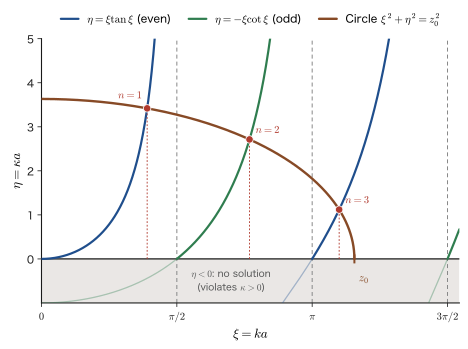
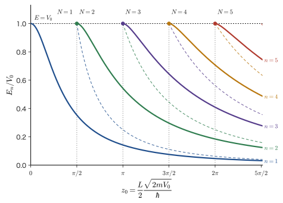

Chapter 11The Finite Potential Well — Penetration and Bound States
In the infinite well of the previous chapter, the walls were infinitely high, and the particle could not get outside the box at all. Real walls, however, have a finite height. In a quantum well made from a thin semiconductor film, the height of the wall that confines the electron is at most about $0.3\ \mathrm{eV}$, and the forces that confine electrons inside atoms and molecules are also finite. When the wall height $V_0$ is finite and the energy $E$ of the particle is lower than $V_0$, in classical mechanics (AD 03, Chapter 4, Section 4.5 Conservation of Mechanical Energy) the particle remains confined in the well and can never enter the wall, because inside the wall its kinetic energy would become negative. In quantum mechanics, however, the wave function penetrates into the wall while decaying exponentially. The probability of finding the particle inside the wall is not $0$. In this chapter we calculate, without skipping a single line, where this penetration comes from and how, as a result, the discrete energy levels of the previous chapter change.
The approach is the same as in the previous chapter. We solve the equation in each region where the potential is constant, and join the wave function and its slope smoothly at the boundaries between the regions. This condition of “matching the value and the slope at the boundary” is the same mathematics as the condition that the displacement and the slope be continuous at the junction when two strings of different densities are joined (AD 03, Chapter 14, Section 14.2). Since there are two boundaries and three regions, there are four unknown constants and four conditions, and a $4\times4$ determinant appears. The condition that this determinant equal $0$ is the equation that determines the energy, and it is an equation containing $\tan$. It cannot be solved algebraically, but it can be solved by eye as the intersections of a circle and the $\tan$ curves (the graphical method), and one can see at a glance how many bound states there are and how the levels are arranged. The penetration is also of the same nature as the light that leaks out to the other side of the boundary when light undergoes total internal reflection (AD 03, Chapter 14, Section 14.7).
The results of this chapter are used directly in the design of semiconductor quantum wells (light-emitting diodes, semiconductor lasers, infrared detectors). Moreover, the limit in which the well becomes an extremely narrow and deep $\delta$-function well, and the splitting into bonding and antibonding states when two such wells are placed side by side, are the starting point of molecular orbitals (Computational Materials Science, AD 05) and bands (Solid-State Physics, AD 06).
- Be able to solve a well with walls of finite height by dividing it into three regions, and to explain that outside the well the wave function decays like $e^{-\kappa\abs{x}}$ (penetration) and that the penetration depth is $1/\kappa$
- Be able to form a $4\times4$ determinant from the continuity of the wave function and its slope, to carry out the cofactor expansion, Euler's formula, the double-angle formulas, and the factorization without skipping a line, and to derive the quantization conditions $k\tan ka=\kappa$ (even) and $-k\cot ka=\kappa$ (odd). Be able to verify the agreement with the even/odd (parity) method ($2\times2$)
- Be able to introduce the dimensionless quantities $\xi=ka$, $\eta=\kappa a$ and $z_0=\dfrac{L}{2}\dfrac{\sqrt{2mV_0}}{\hbar}$, and to find the levels as the intersections of the circle $\xi^2+\eta^2=z_0^2$ with $\xi\tan\xi$ and $-\xi\cot\xi$. Be able to derive the number of bound states $N=\lceil 2z_0/\pi\rceil$
- Be able to explain that the levels lie lower than those of the infinite well, that the result of the previous chapter is recovered as $V_0\to\infty$, that in the limit of a shallow well the binding energy becomes $mV_0^2L^2/(2\hbar^2)$, and that in one dimension there is always a bound state
- Be able to estimate the levels and the emission wavelength of a GaAs/AlGaAs quantum well by using the matching condition (the BenDaniel–Duke condition) at the interface between semiconductors with different effective masses
- Be able to derive the bound state $\kappa=m\alpha/\hbar^2$ of a $\delta$-function well, and the bonding and antibonding states $\kappa=(m\alpha/\hbar^2)(1\pm e^{-\kappa R})$ for two $\delta$ wells
Source notes: Yasuhide Mochizuki, “Physics Notes: Quantum Mechanics 2,” pp. 8–11.
11.1 The Schrödinger Equation for the Finite Well — Solutions in Three Regions and Penetration
11.1.1 Setting up the problem
Suppose an electron (mass $m$) can move only along the $x$ axis and that its motion does not depend on time (it is in a stationary state). As in the previous chapter, the spatial part $\psi(x)$ of the wave function then satisfies the time-independent Schrödinger equation:
\begin{equation} -\frac{\hbar^2}{2m}\frac{\dd^2\psi}{\dd x^2}+V(x)\,\psi=E\,\psi \label{eq:11-tise} \end{equation}Here $V(x)$ is the potential energy and $E$ is the total energy that we want to find. In the infinite well of the previous chapter we took the wall height to be $\infty$, but in this chapter we give the walls a finite height.
Definition 11.1: Finite potential well
For positive constants $a$ and $V_0$, the potential given by
\begin{equation} V(x)=\begin{cases}0 & (\abs{x}\le a)\\[1mm] V_0 & (\abs{x}\gt a)\end{cases} \label{eq:11-V} \end{equation}is called a finite potential well (also known as a finite square well). The width of the well is $L=2a$, and the height of the walls is $V_0$. We take the origin of energy at the bottom of the well ($V=0$).
The problem of this chapter is to solve Eq. \eqref{eq:11-tise} for an electron in this potential and to find the allowed energies $E$ and wave functions $\psi(x)$. Taking the $x$ axis as the coordinate axis, we call the region $x\lt-a$ Region I, the region $-a\le x\le a$ Region II (inside the well), and the region $x\gt a$ Region III (Figure 11.1).
Notation: Well width $L$, half-width $a$, wavenumber $k$, decay constant $\kappa$, state number $n$
As in the previous chapter, we denote the width of the well by $L$ and its half-width by $a$, with $L=2a$. The calculations in this chapter are done in symmetric coordinates (the origin is at the center of the well), in which the parity (even or odd) of the wave function is easy to see, so we mainly use $a$ and also write the results in terms of $L$. The wavenumber inside the well (the advance of the wave's phase per unit length, or the number of waves in a length $2\pi$) is denoted $k$, and the rate at which the wave function decays outside the well is denoted by the decay constant $\kappa$. Both are positive numbers, and $1/k$ and $1/\kappa$ have the dimension of length. As with the particle in a box in the previous chapter, we number the bound states $n=1,2,3,\dots$ starting from the lowest energy (only the harmonic oscillator is counted from $n=0$; Chapter 13).
Intuition: In classical mechanics, a particle with $E\lt V_0$ cannot enter the wall
In classical mechanics (AD 03), the total energy is the sum of the kinetic energy and the potential energy, $E=\dfrac{p^2}{2m}+V(x)$, and $p^2\ge0$ must hold. Inside the wall ($V=V_0$) we have $\dfrac{p^2}{2m}=E-V_0$, and if $E\lt V_0$ the right-hand side is negative. A motion with an imaginary momentum cannot occur, so the particle cannot enter the wall. The particle runs through the well ($V=0$) at constant speed, and when it reaches a wall ($x=\pm a$ are the turning points) it is bounced back and moves back and forth. In this case $E$ can take any value with $0\lt E\lt V_0$. In quantum mechanics, as we will see below, this $E$ takes only discrete values, and the wave function also penetrates into the wall.
Definition 11.2: Bound states and scattering states
A state in which the particle is confined near the well, with $\psi\to0$ as $\abs{x}\to\infty$, so that it is normalizable ($\int_{-\infty}^{\infty}\abs{\psi}^2\dd x=1$), is called a bound state. By contrast, a state in which the particle can go to infinity, such as one with $E\gt V_0$, is called a scattering state. The wave function of a scattering state continues to oscillate even as $\abs{x}\to\infty$, so it cannot be normalized in the usual sense.
In this section and the next we find the bound states. Scattering states ($E\gt V_0$) are treated in the next chapter (Chapter 12). As we will verify later (Section 11.1.5), the energies of the bound states lie in the range $0\lt E\lt V_0$. In classical mechanics every value of $E\lt V_0$ was allowed, but in quantum mechanics only discrete values among them are allowed.
11.1.2 The solution in Region II (inside the well)
First consider Region II, $-a\le x\le a$. Here $V=0$, so Eq. \eqref{eq:11-tise} becomes
\begin{equation} -\frac{\hbar^2}{2m}\frac{\dd^2\psi}{\dd x^2}=E\psi \qquad\text{that is}\qquad \psi''=-\frac{2mE}{\hbar^2}\,\psi \label{eq:11-inside} \end{equation}We will prove in Section 11.1.5 that $E\gt0$. For now we assume this and let
\begin{equation} k\equiv\frac{\sqrt{2mE}}{\hbar}\qquad\left(k^2=\frac{2mE}{\hbar^2}\right) \label{eq:11-k} \end{equation}Then Eq. \eqref{eq:11-inside} becomes the equation of simple harmonic motion, $\psi''=-k^2\psi$. Both $\cos kx$ and $\sin kx$ satisfy this equation ($(\cos kx)''=-k^2\cos kx$, $(\sin kx)''=-k^2\sin kx$). Since it is a second-order linear homogeneous differential equation, there are two independent solutions, and the general solution is a linear combination of them (University Mathematics, Chapter 35, Section 35.4):
\begin{equation} \psi_{\mathrm{II}}(x)=A_1\cos kx+B_1\sin kx=A\,e^{ikx}+B\,e^{-ikx} \label{eq:11-gen} \end{equation}Here the coefficients of the two ways of writing are related as follows by Euler's formula $e^{\pm ikx}=\cos kx\pm i\sin kx$:
$$ A\,e^{ikx}+B\,e^{-ikx}=A(\cos kx+i\sin kx)+B(\cos kx-i\sin kx)=(A+B)\cos kx+i(A-B)\sin kx $$That is, $A_1=A+B$ and $B_1=i(A-B)$ (conversely, $A=\dfrac{A_1-iB_1}{2}$ and $B=\dfrac{A_1+iB_1}{2}$). The function $e^{ikx}$ is a plane wave traveling to the right (momentum $+\hbar k$) and $e^{-ikx}$ is a plane wave traveling to the left (momentum $-\hbar k$), and Eq. \eqref{eq:11-gen} expresses the fact that the wave of a particle repeatedly reflected at the walls is a superposition of a right-moving wave and a left-moving wave (a standing wave). Which way of writing to use is decided by convenience. In the determinant of the next section we use the form $e^{\pm ikx}$, and in the even/odd (parity) method of Section 11.2.8 we use the form $\cos kx,\ \sin kx$.
11.1.3 Solutions in Regions I and III (outside the well) — exponential decay
Next we consider $x\lt-a$ (Region I). Here $V=V_0$, so Eq. \eqref{eq:11-tise} becomes
\begin{equation} -\frac{\hbar^2}{2m}\psi''+V_0\psi=E\psi \qquad\text{that is}\qquad \frac{\hbar^2}{2m}\psi''+(E-V_0)\,\psi=0 \label{eq:11-outside} \end{equation}Here we consider the case in which, in classical mechanics, the particle cannot enter the wall, that is, the case $V_0\gt E$. Let the solution be $\psi=e^{\lambda x}$ and substitute it into Eq. \eqref{eq:11-outside}. Since $\psi''=\lambda^2\psi$, we obtain the following characteristic equation (University Mathematics, Chapter 35, Section 35.4):
$$ \frac{\hbar^2}{2m}\lambda^2+E-V_0=0 \qquad\therefore\quad \lambda^2=\frac{2m(V_0-E)}{\hbar^2}\quad\therefore\quad \lambda=\pm\frac{\sqrt{2m(V_0-E)}}{\hbar} $$Since $V_0-E\gt0$, $\lambda$ is real. We set
\begin{equation} \kappa\equiv\frac{\sqrt{2m(V_0-E)}}{\hbar}\qquad\left(\kappa^2=\frac{2m(V_0-E)}{\hbar^2}\right) \label{eq:11-kappa} \end{equation}(the decay constant). The general solution in Region I is $\psi_{\mathrm{I}}(x)=F_1\,e^{\kappa x}+F_2\,e^{-\kappa x}$. However, as $x\to-\infty$ we have $e^{-\kappa x}\to\infty$, so the wave function diverges; hence we must set $F_2=0$. Therefore, in Region I, writing $F_1$ as $F$, we have
\begin{equation} \psi_{\mathrm{I}}(x)=F\,e^{\kappa x}\qquad(x\lt-a) \label{eq:11-left} \end{equation}Similarly, for $x\gt a$ (Region III) Eq. \eqref{eq:11-outside} has the same form (since $E-V_0\lt0$), so the general solution is $\psi_{\mathrm{III}}(x)=G_1\,e^{\kappa x}+G_2\,e^{-\kappa x}$. Since $e^{\kappa x}\to\infty$ as $x\to+\infty$, we must have $G_1=0$, and writing $G_2$ as $G$, we obtain
\begin{equation} \psi_{\mathrm{III}}(x)=G\,e^{-\kappa x}\qquad(x\gt a) \label{eq:11-right} \end{equation}With this, the solutions in the three regions now all have the forms of Eqs. \eqref{eq:11-gen}, \eqref{eq:11-left}, and \eqref{eq:11-right}. The unknowns are the four constants $A,B,F,G$ and the energy $E$, which has not yet been determined (and hence $k$ and $\kappa$).
Why can we discard the divergent solutions?
For the divergent solution $e^{-\kappa x}$ ($x\to-\infty$), $\int\abs{\psi}^2\dd x$ diverges and the solution cannot be normalized. In the Born interpretation, $\abs{\psi}^2$ is the probability density, and its integral over all space must equal $1$, so such a solution cannot represent the state of a particle. Moreover, a probability of finding the particle that grows as we move farther from the wall contradicts the situation of “a particle confined in a well.” Therefore we adopt only the solutions that decay as $x\to\pm\infty$.
Intuition: Oscillation if $E\gt V_0$, decay if $E\lt V_0$
If $E\gt V_0$ inside the wall, Eq. \eqref{eq:11-outside} becomes $\psi''=-\dfrac{2m(E-V_0)}{\hbar^2}\psi$, which has the same oscillatory form as inside the well, and the wave function oscillates even inside the wall and extends to infinity (a scattering state, Chapter 12). Only when $E\lt V_0$ does the wave function decay. “Where there is kinetic energy, the solution oscillates like a wave, and where the kinetic energy is negative, it decays exponentially”—this is a general property of the solutions of the Schrödinger equation.
11.1.4 Penetration depth
The wave function in Region III, $\psi=G\,e^{-\kappa x}$, is multiplied by $e^{-\kappa d}$ when we move a distance $d$ away from the wall surface $x=a$ (to $x=a+d$). The probability density $\abs{\psi}^2$ is multiplied by $e^{-2\kappa d}$. At $d=1/\kappa$, $\psi$ falls to $1/e\approx0.37$ times its value at the surface. We therefore make the following definition.
Definition 11.3: Penetration depth
The length
\begin{equation} \delta_{\mathrm p}=\frac{1}{\kappa}=\frac{\hbar}{\sqrt{2m(V_0-E)}} \label{eq:11-pen} \end{equation}that gives a measure of how deep into the wall the wave function reaches is called the penetration depth. The higher the wall (the larger $V_0-E$) and the heavier the particle, the shorter it is.
($\delta_{\mathrm p}$ carries a subscript to distinguish it from the symbol for the $\delta$ function that appears later.) As $V_0\to\infty$, $\delta_{\mathrm p}\to0$, which returns us to the statement of the previous chapter that “$\psi=0$ inside the wall.” We also have $\delta_{\mathrm p}\to0$ when the mass $m$ is large. For a baseball ($m\sim0.1\ \mathrm{kg}$) the penetration depth is practically $0$, and the classical-mechanics intuition that “the ball cannot enter the wall” is correct. Penetration becomes an issue only for light particles such as electrons (at the atomic scale).
Example 11.1: Penetration depths of an electron and of an electron in a semiconductor
(1) For a free electron (mass $m_{\mathrm e}$), find the penetration depth when the wall height $V_0$ is higher than the energy $E$ by $1\ \mathrm{eV}$ ($V_0-E=1\ \mathrm{eV}$) and when it is higher by $3\ \mathrm{eV}$. (2) An electron in GaAs has an effective mass (the apparent mass of an electron in a crystal, Section 11.4) $m^*=0.067\,m_{\mathrm e}$. Find the penetration depth for $V_0-E=0.1\ \mathrm{eV}$.
Solution. We first compute, in units of $\mathrm{eV\,nm^2}$, the quantity $\dfrac{\hbar^2}{2m_{\mathrm e}}$, which is common to the calculations with Eq. \eqref{eq:11-pen}. From $\hbar=1.054\,571\,817\times10^{-34}\ \mathrm{J\,s}$ and $m_{\mathrm e}=9.109\,383\,7015\times10^{-31}\ \mathrm{kg}$, we have
$$ \frac{\hbar^2}{2m_{\mathrm e}}=\frac{(1.054\,571\,817\times10^{-34})^2}{2\times9.109\,383\,7015\times10^{-31}}\ \mathrm{J\,m^2}=6.1043\times10^{-39}\ \mathrm{J\,m^2} $$Converting with $1\ \mathrm{eV}=1.602\,176\,634\times10^{-19}\ \mathrm{J}$ and $1\ \mathrm{m^2}=10^{18}\ \mathrm{nm^2}$, we obtain
$$ \frac{\hbar^2}{2m_{\mathrm e}}=\frac{6.1043\times10^{-39}}{1.602\,177\times10^{-19}}\ \mathrm{eV\,m^2}=3.8100\times10^{-20}\ \mathrm{eV\,m^2}=0.038\,100\ \mathrm{eV\,nm^2} $$Eq. \eqref{eq:11-pen} can be written as $\dfrac{1}{\kappa}=\sqrt{\dfrac{\hbar^2}{2m}\cdot\dfrac{1}{V_0-E}}$, so (1) for $V_0-E=1\ \mathrm{eV}$ we have $\dfrac{1}{\kappa}=\sqrt{0.038\,100}\ \mathrm{nm}=0.195\ \mathrm{nm}$. For $3\ \mathrm{eV}$ we have $\sqrt{0.038\,100/3}\ \mathrm{nm}=0.113\ \mathrm{nm}$. Both are of the same order as the size of an atom (about $0.1\ \mathrm{nm}$). (2) For $m^*=0.067\,m_{\mathrm e}$ we have $\dfrac{\hbar^2}{2m^*}=\dfrac{0.038\,100}{0.067}=0.5687\ \mathrm{eV\,nm^2}$, and $\dfrac{1}{\kappa}=\sqrt{0.5687/0.1}\ \mathrm{nm}=2.38\ \mathrm{nm}$. In a semiconductor with a light effective mass and a low wall, the penetration depth is long, a few $\mathrm{nm}$, which is of the same order as the width of a quantum well, a few $\mathrm{nm}$.
Example 11.2: The distance at which the probability density falls to 1/100
For an electron with $V_0-E=1\ \mathrm{eV}$, how many $\mathrm{nm}$ must we go into the wall from its surface for the probability density to fall to $1/100$ of its value at the surface?
Solution. Since the probability density is $\abs{\psi}^2\propto e^{-2\kappa d}$, from $e^{-2\kappa d}=\dfrac{1}{100}$ we get $2\kappa d=\ln100=4.6052$, and $d=\dfrac{\ln100}{2\kappa}=2.3026\times\dfrac{1}{\kappa}$. Using $\dfrac{1}{\kappa}=0.195\ \mathrm{nm}$ from Example 11.1, we obtain $d=2.3026\times0.195\ \mathrm{nm}=0.449\ \mathrm{nm}$. After penetrating about $0.45\ \mathrm{nm}$ into the wall (about two atoms' worth), the probability density has decreased by two orders of magnitude, so we see that penetration is limited to a depth of a few atoms.
Application: Light that penetrates in total internal reflection
When light travels from glass toward air and is incident at an angle larger than the critical angle, it undergoes total internal reflection (AD 03, Chapter 14, Section 14.7). The energy of the light then does not flow out into the air, but the electromagnetic field penetrates from the interface into the air side, decaying exponentially, over a distance of about a wavelength. This field, called an evanescent wave, can be described by the same mathematics (a decaying exponential) as the penetration of a particle into a wall. There are microscopes that use this phenomenon to observe only the vicinity of a sample's surface (near-field optical microscopes and total internal reflection microscopes). The penetration of electrons likewise underlies the principle by which the scanning tunneling microscope (STM) measures atomic corrugations (Chapter 12). Related simulator: Tunneling.
11.1.5 Why $0\lt E\lt V_0$?
Here we verify that the energy of a bound state lies in the range $0\lt E\lt V_0$. First, the reason why $E\lt V_0$ is necessary has already been given. For $E\gt V_0$, the solutions in Regions I and III oscillate and do not decay as $\abs{x}\to\infty$, so they cannot be normalized. For $E=V_0$, we have $\psi''=0$ in Regions I and III, that is, $\psi$ is a linear function, and it approaches $0$ as $\abs{x}\to\infty$ only when $\psi\equiv0$. Therefore a bound state requires $E\lt V_0$. Next we show that $E\gt0$.
Derivation: Showing that $E\gt0$
Suppose that a normalized bound state $\psi$ satisfies $\hat{H}\psi=E\psi$. Multiplying both sides by $\psi^*$ from the left and integrating over $x$, we obtain, since $\int\abs{\psi}^2\dd x=1$, $E=\displaystyle\int_{-\infty}^{\infty}\psi^*\hat{H}\psi\dd x=\expval{\hat{T}}+\expval{\hat{V}}$. Here $\hat{T}=-\dfrac{\hbar^2}{2m}\dfrac{\dd^2}{\dd x^2}$ is the kinetic energy operator, and integration by parts gives
$$ \expval{\hat{T}}=-\frac{\hbar^2}{2m}\int_{-\infty}^{\infty}\psi^*\psi''\dd x=-\frac{\hbar^2}{2m}\Bigl[\psi^*\psi'\Bigr]_{-\infty}^{\infty}+\frac{\hbar^2}{2m}\int_{-\infty}^{\infty}\abs{\psi'}^2\dd x=\frac{\hbar^2}{2m}\int_{-\infty}^{\infty}\abs{\psi'}^2\dd x $$(The boundary term is $0$ because, for a bound state, $\psi\to0$ (and $\psi'\to0$) as $x\to\pm\infty$.) Since $\abs{\psi'}^2\ge0$, we have $\expval{\hat{T}}\ge0$, and equality holds only when $\psi'\equiv0$, that is, only when $\psi$ is a constant. A constant cannot be normalized, so $\expval{\hat{T}}\gt0$. Also, $\expval{\hat{V}}=V_0\displaystyle\int_{\abs{x}\gt a}\abs{\psi}^2\dd x\ge0$. Therefore $E=\expval{\hat{T}}+\expval{\hat{V}}\gt0$.
∎
This result is a special case of the general property that the energy of a bound state is always higher than the minimum value of the potential (here, $0$). It is the same as the reason why no solution with $E=0$ existed for the infinite well (previous chapter).
11.1.6 Even and odd solutions — parity
The potential of the finite well satisfies $V(-x)=V(x)$ (it is symmetric about the origin). In this case, the solution is either an even function or an odd function. Verifying this now will cut the calculation in the next section in half.
Theorem 11.1: Parity of bound states
If $V(-x)=V(x)$, the eigenfunction of a one-dimensional bound state is either an even function, $\psi(-x)=\psi(x)$, or an odd function, $\psi(-x)=-\psi(x)$.
Proof
Let $\psi(x)$ be a solution with energy $E$. Define a new function $\tilde{\psi}(x)\equiv\psi(-x)$. By the chain rule, $\tilde{\psi}''(x)=\psi''(-x)$ (we differentiate twice, so the sign is $(-1)^2=1$). Therefore we have
$$ -\frac{\hbar^2}{2m}\tilde{\psi}''(x)+V(x)\tilde{\psi}(x)=-\frac{\hbar^2}{2m}\psi''(-x)+V(-x)\psi(-x)=E\psi(-x)=E\tilde{\psi}(x) $$(in the first equality we used $\tilde{\psi}''(x)=\psi''(-x)$, $V(x)=V(-x)$, and $\tilde{\psi}(x)=\psi(-x)$; in the second equality, the fact that the equation also holds at the point $-x$; and in the third equality, $\psi(-x)=\tilde{\psi}(x)$). Hence $\tilde{\psi}$ is also a solution with the same energy $E$.
Now, a one-dimensional bound state is nondegenerate (there is only one linearly independent solution for the same $E$). We show this. For two solutions $\psi_1,\psi_2$ with the same $E$, form $W\equiv\psi_1\psi_2'-\psi_1'\psi_2$. Then $W'=\psi_1\psi_2''-\psi_1''\psi_2=\dfrac{2m}{\hbar^2}(V-E)(\psi_1\psi_2-\psi_1\psi_2)=0$, so $W$ is a constant. For bound states, $\psi_1,\psi_2\to0$ as $x\to\infty$, and also $\psi_1',\psi_2'\to0$ (since they are derivatives of decaying exponentials), so $W\to0$; since $W$ is a constant, $W=0$, that is, $\psi_1'/\psi_1=\psi_2'/\psi_2$, and so $\psi_2\propto\psi_1$. Therefore we can write $\tilde{\psi}(x)=\psi(-x)=c\,\psi(x)$ ($c$ is a constant). Replacing $x$ by $-x$, we get $\psi(x)=c\,\psi(-x)=c^2\psi(x)$, so $c^2=1$, that is, $c=\pm1$. The case $c=+1$ is an even function, and $c=-1$ is an odd function.
∎
For the functions $\psi_{\mathrm{I}}=F\,e^{\kappa x}$ and $\psi_{\mathrm{III}}=G\,e^{-\kappa x}$ in Regions I and III: for an even function, $\psi_{\mathrm{I}}(-x)=F\,e^{-\kappa x}$ equals $\psi_{\mathrm{III}}(x)=G\,e^{-\kappa x}$, so $F=G$; for an odd function, $-\psi_{\mathrm{I}}(-x)=-F\,e^{-\kappa x}$ equals $\psi_{\mathrm{III}}(x)$, so $F=-G$. Inside the well, an even function can be written with $\cos kx$ alone and an odd function with $\sin kx$ alone. In summary,
\begin{equation} \text{even:}\ \psi=\begin{cases}A_1\cos kx&(\abs{x}\le a)\\ G\,e^{-\kappa\abs{x}}&(\abs{x}\gt a)\end{cases}\qquad \text{odd:}\ \psi=\begin{cases}B_1\sin kx&(\abs{x}\le a)\\ \pm G\,e^{-\kappa\abs{x}}&(x\gtrless\pm a)\end{cases} \label{eq:11-parity} \end{equation}(the sign of the outer part of the odd function is $+G\,e^{-\kappa x}$ for $x\gt a$ and $-G\,e^{\kappa x}$ for $x\lt-a$). The solutions of the infinite well in the previous chapter were likewise even functions ($\cos$) for odd $n$ and odd functions ($\sin$) for even $n$.
11.2 Matching Conditions and the Quantization Condition — From a $4\times4$ Determinant
11.2.1 Matching conditions at the boundaries between regions
In the previous section we obtained the solutions in the three regions, but the solutions of the individual regions remain separate unless matching conditions are imposed at the boundaries $x=\pm a$. The matching conditions are as stated in the following conclusion, derived in Chapter 9 (Theorem 9.3(i); Section 9.6.3). Here we restate only the conclusion and omit the derivation.
Theorem 11.2: Matching condition (restatement of Theorem 9.3(i))
At a point where the potential $V(x)$ merely jumps by a finite amount (a point with no infinite singularity such as a $\delta$ function), the wave function $\psi$ and its derivative $\psi'$ are continuous.
The key point of the derivation is to integrate Eq. \eqref{eq:11-tise} over a small interval $[a-\varepsilon,\ a+\varepsilon]$ around the boundary and let $\varepsilon\to0$. If $V$ and $\psi$ are finite, the right-hand side tends to $0$ and $\psi'$ becomes continuous (for the detailed derivation, see Chapter 9, Section 9.6.3).
This condition is the same mathematics as the continuity of the displacement and the slope at the junction when two strings of different densities are joined (AD 03, Chapter 14, Section 14.2). However, at the wall of the infinite well of the previous chapter ($V=\infty$), the premise of the derivation that “$V$ is finite” does not hold, and $\psi'$ is allowed to jump (previous chapter). In the finite well the wall height is finite, so both $\psi$ and $\psi'$ must be continuous. This is expressed by saying that the wave function is “continuous and smooth” at the position of the wall.
11.2.2 The continuity condition and the smoothness condition
The derivatives of the Region II solution Eq. \eqref{eq:11-gen} (of the form $e^{\pm ikx}$), the Region I solution Eq. \eqref{eq:11-left}, and the Region III solution Eq. \eqref{eq:11-right} are
$$ \psi_{\mathrm{II}}'(x)=ik\bigl(A\,e^{ikx}-B\,e^{-ikx}\bigr),\qquad \psi_{\mathrm{I}}'(x)=\kappa F\,e^{\kappa x},\qquad \psi_{\mathrm{III}}'(x)=-\kappa G\,e^{-\kappa x} $$respectively. At $x=-a$ Regions I and II are joined, and at $x=+a$ Regions II and III are joined. Writing the condition that $\psi$ and $\psi'$ be continuous at each point, with $x=\mp a$ substituted, we obtain the following four equations.
Continuity condition ($\psi$ is continuous):
\begin{equation} \begin{cases} A\,e^{ik(-a)}+B\,e^{-ik(-a)}=F\,e^{\kappa(-a)} & (x=-a)\\[1mm] A\,e^{ika}+B\,e^{-ika}=G\,e^{-\kappa a} & (x=+a) \end{cases} \label{eq:11-cont} \end{equation}Smoothness condition ($\psi'$ is continuous; also called the differentiability condition):
\begin{equation} \begin{cases} ik\bigl\{A\,e^{ik(-a)}-B\,e^{-ik(-a)}\bigr\}=\kappa F\,e^{\kappa(-a)} & (x=-a)\\[1mm] ik\bigl(A\,e^{ika}-B\,e^{-ika}\bigr)=-\kappa G\,e^{-\kappa a} & (x=+a) \end{cases} \label{eq:11-smooth} \end{equation}Noting that $e^{ik(-a)}=e^{-ika}$, $e^{-ik(-a)}=e^{ika}$, and $e^{\kappa(-a)}=e^{-\kappa a}$, we rearrange the equations:
\begin{align} A\,e^{-ika}+B\,e^{ika}&=F\,e^{-\kappa a} \label{eq:11-c1}\\ A\,e^{ika}+B\,e^{-ika}&=G\,e^{-\kappa a} \label{eq:11-c2}\\ ik\,A\,e^{-ika}-ik\,B\,e^{ika}&=\kappa F\,e^{-\kappa a} \label{eq:11-c3}\\ ik\,A\,e^{ika}-ik\,B\,e^{-ika}&=-\kappa G\,e^{-\kappa a} \label{eq:11-c4} \end{align}There are four unknowns, $A,B,F,G$, and also four equations. Moreover, when written in the homogeneous form with right-hand side $0$, they form a system of simultaneous linear equations in $A,B,F,G$.
11.2.3 The $4\times4$ matrix and the condition for a nontrivial solution
Moving the right-hand sides of Eqs. \eqref{eq:11-c1}–\eqref{eq:11-c4} to the left-hand sides and arranging the terms by the unknowns $(A,B,F,G)$, we obtain
\begin{equation} \begin{pmatrix} e^{-ika} & e^{ika} & -e^{-\kappa a} & 0\\ ik\,e^{-ika} & -ik\,e^{ika} & -\kappa\,e^{-\kappa a} & 0\\ e^{ika} & e^{-ika} & 0 & -e^{-\kappa a}\\ ik\,e^{ika} & -ik\,e^{-ika} & 0 & \kappa\,e^{-\kappa a} \end{pmatrix} \begin{pmatrix}A\\B\\F\\G\end{pmatrix} =\begin{pmatrix}0\\0\\0\\0\end{pmatrix} \label{eq:11-mat} \end{equation}(Row 1 corresponds to Eq. \eqref{eq:11-c1}, row 2 to Eq. \eqref{eq:11-c3}, row 3 to Eq. \eqref{eq:11-c2}, and row 4 to Eq. \eqref{eq:11-c4}. That is, rows 1 and 2 are the continuity and smoothness conditions at $x=-a$, and rows 3 and 4 are the conditions at $x=+a$.) Let $C$ denote this $4\times4$ matrix.
This system of homogeneous linear equations always has the trivial solution $A=B=F=G=0$. But this is the meaningless solution $\psi\equiv0$, that is, the one in which the particle is nowhere. For a particle to exist, there must be a nontrivial solution in which $A,B,F,G$ are not all $0$ at the same time. A necessary and sufficient condition for a system of homogeneous linear equations to have a nontrivial solution is that the determinant of the coefficient matrix be $0$ (University Mathematics, Chapter 9, Section 9.3):
\begin{equation} \det C=0 \label{eq:11-detC} \end{equation}The entries of the matrix $C$ contain $E$ (and hence $k$ and $\kappa$). Eq. \eqref{eq:11-detC} is a condition that $E$ must satisfy. That is, “the values of $E$ for which the four homogeneous equations hold simultaneously are only special ones,” and this is the origin of the quantization of energy. Once $E$ is fixed at such a value, $\det C=0$, so the rank of $C$ is at most 3; but a bound state is not degenerate (Theorem 11.1), so there is only one linearly independent solution, and the rank of $C$ is exactly 3. Then the ratio $A:B:F:G$ is determined in exactly one way. The overall magnitude is fixed by the normalization condition (previous chapter).
11.2.4 Cofactor expansion along row 1
We expand the determinant $\det C$ in cofactors along row 1 (University Mathematics, Chapter 8, Section 8.4). The entries of row 1 are $C_{11}=e^{-ika}$, $C_{12}=e^{ika}$, $C_{13}=-e^{-\kappa a}$, and $C_{14}=0$. The minor $M_{1j}$ of the $(1,j)$ entry is the $3\times3$ determinant obtained by deleting row 1 and column $j$, and the expansion is $\det C=C_{11}M_{11}-C_{12}M_{12}+C_{13}M_{13}-C_{14}M_{14}$ (the sign is $(-1)^{1+j}$). Since $C_{14}=0$, the fourth term drops out. Writing the minors out explicitly, we have
\begin{align} \det C&=e^{-ika} \begin{vmatrix} -ik\,e^{ika} & -\kappa\,e^{-\kappa a} & 0\\ e^{-ika} & 0 & -e^{-\kappa a}\\ -ik\,e^{-ika} & 0 & \kappa\,e^{-\kappa a} \end{vmatrix} +(-1)^{1+2}\,e^{ika} \begin{vmatrix} ik\,e^{-ika} & -\kappa\,e^{-\kappa a} & 0\\ e^{ika} & 0 & -e^{-\kappa a}\\ ik\,e^{ika} & 0 & \kappa\,e^{-\kappa a} \end{vmatrix} \notag\\ &\quad+(-1)^{1+3}\bigl(-e^{-\kappa a}\bigr) \begin{vmatrix} ik\,e^{-ika} & -ik\,e^{ika} & 0\\ e^{ika} & e^{-ika} & -e^{-\kappa a}\\ ik\,e^{ika} & -ik\,e^{-ika} & \kappa\,e^{-\kappa a} \end{vmatrix} \label{eq:11-cofactor} \end{align}Here the first is the $3\times3$ determinant formed from columns 2, 3, and 4 (column 1 removed); the second is formed from columns 1, 3, and 4 (column 2 removed); and the third is formed from columns 1, 2, and 4 (column 3 removed).
Caution: The lower-right entry of the minors is $+\kappa\,e^{-\kappa a}$
In all three minors, the lower-right entry (row 3, column 3) comes from row 4, column 4 of $C$, $C_{44}=+\kappa\,e^{-\kappa a}$. Moving the right-hand side $-\kappa G\,e^{-\kappa a}$ of Eq. \eqref{eq:11-c4} to the left-hand side makes the coefficient of $G$ equal to $+\kappa\,e^{-\kappa a}$. Dragged along by the coefficient $-e^{-\kappa a}$ of $G$ in row 3, one easily miswrites the lower-right entry as $-\kappa\,e^{-\kappa a}$. A slip in a sign quietly ruins the final result. As soon as the matrix has been built, it is a good idea to check the sign of each entry against Eqs. \eqref{eq:11-c1}–\eqref{eq:11-c4}.
We evaluate each of the three $3\times3$ determinants. In every case it is easiest to expand along a column or row that contains many zero entries.
The first minor $M_{11}$. Column 2 contains only $0$ apart from $-\kappa\,e^{-\kappa a}$ (row 1, column 2), so we expand along column 2. The sign of the $(1,2)$ entry is $(-1)^{1+2}=-1$, and the remaining $2\times2$ determinant is formed from rows 2 and 3 and columns 1 and 3:
$$ M_{11}=(-1)\cdot\bigl(-\kappa\,e^{-\kappa a}\bigr) \begin{vmatrix} e^{-ika} & -e^{-\kappa a}\\ -ik\,e^{-ika} & \kappa\,e^{-\kappa a} \end{vmatrix} =\kappa\,e^{-\kappa a}\Bigl\{e^{-ika}\cdot\kappa\,e^{-\kappa a}-\bigl(-e^{-\kappa a}\bigr)\bigl(-ik\,e^{-ika}\bigr)\Bigr\} $$The expression in the braces is $e^{-ika}e^{-\kappa a}\,(\kappa-ik)$, so
$$ M_{11}=\kappa\,(\kappa-ik)\,e^{-ika}\,e^{-2\kappa a} $$The second minor $M_{12}$. Similarly, we expand along column 2:
$$ M_{12}=(-1)\cdot\bigl(-\kappa\,e^{-\kappa a}\bigr) \begin{vmatrix} e^{ika} & -e^{-\kappa a}\\ ik\,e^{ika} & \kappa\,e^{-\kappa a} \end{vmatrix} =\kappa\,e^{-\kappa a}\Bigl\{e^{ika}\cdot\kappa\,e^{-\kappa a}-\bigl(-e^{-\kappa a}\bigr)\bigl(ik\,e^{ika}\bigr)\Bigr\} =\kappa\,(\kappa+ik)\,e^{ika}\,e^{-2\kappa a} $$The third minor $M_{13}$. We expand along row 1. Since row 1 is $(ik\,e^{-ika},\ -ik\,e^{ika},\ 0)$, the third entry drops out:
\begin{align*} M_{13}&=ik\,e^{-ika} \begin{vmatrix} e^{-ika} & -e^{-\kappa a}\\ -ik\,e^{-ika} & \kappa\,e^{-\kappa a} \end{vmatrix} -\bigl(-ik\,e^{ika}\bigr) \begin{vmatrix} e^{ika} & -e^{-\kappa a}\\ ik\,e^{ika} & \kappa\,e^{-\kappa a} \end{vmatrix}\\ &=ik\,e^{-ika}\cdot e^{-ika}e^{-\kappa a}(\kappa-ik)+ik\,e^{ika}\cdot e^{ika}e^{-\kappa a}(\kappa+ik)\\ &=ik\,e^{-\kappa a}\Bigl\{(\kappa-ik)\,e^{-2ika}+(\kappa+ik)\,e^{2ika}\Bigr\} \end{align*}(The two $2\times2$ determinants are the same as those that appeared in the calculation of the minors $M_{11},M_{12}$; they are $e^{-ika}e^{-\kappa a}(\kappa-ik)$ and $e^{ika}e^{-\kappa a}(\kappa+ik)$, respectively.) We substitute these into Eq. \eqref{eq:11-cofactor}.
11.2.5 The four terms of $\det C$ and dividing by the common factor $e^{-2\kappa a}$
We substitute $M_{11},M_{12},M_{13}$ into Eq. \eqref{eq:11-cofactor}. The first term is $e^{-ika}M_{11}$, the second term is $-e^{ika}M_{12}$, and the third term is $(-1)^{1+3}(-e^{-\kappa a})M_{13}=-e^{-\kappa a}M_{13}$:
\begin{align*} \det C&=e^{-ika}\cdot\kappa(\kappa-ik)\,e^{-ika}\,e^{-2\kappa a} -e^{ika}\cdot\kappa(\kappa+ik)\,e^{ika}\,e^{-2\kappa a}\\ &\quad-e^{-\kappa a}\cdot ik\,e^{-\kappa a}\Bigl\{(\kappa-ik)\,e^{-2ika}+(\kappa+ik)\,e^{2ika}\Bigr\} \end{align*}Using $e^{-ika}e^{-ika}=e^{-2ika}$, $e^{ika}e^{ika}=e^{2ika}$, and $e^{-\kappa a}e^{-\kappa a}=e^{-2\kappa a}$, and expanding the braces in the last term, $\det C$ becomes a sum of four terms:
\begin{align} \det C&=\Bigl\{\kappa(\kappa-ik)\,e^{-2ika}\Bigr\}e^{-2\kappa a}-\Bigl\{\kappa(\kappa+ik)\,e^{2ika}\Bigr\}e^{-2\kappa a} \notag\\ &\quad-\Bigl\{ik(\kappa-ik)\,e^{-2ika}\Bigr\}e^{-2\kappa a}-\Bigl\{ik(\kappa+ik)\,e^{2ika}\Bigr\}e^{-2\kappa a} \label{eq:11-four} \end{align}All four terms are multiplied by $e^{-2\kappa a}$. Since a real exponential function never becomes $0$, we may divide both sides of $\det C=0$ by $e^{-2\kappa a}\ne0$. Collecting separately the terms containing $e^{-2ika}$ (the first and third terms) and the terms containing $e^{2ika}$ (the second and fourth terms), we get
$$ \Bigl\{\kappa(\kappa-ik)-ik(\kappa-ik)\Bigr\}e^{-2ika}-\Bigl\{\kappa(\kappa+ik)+ik(\kappa+ik)\Bigr\}e^{2ika}=0 $$Since $\kappa(\kappa-ik)-ik(\kappa-ik)=(\kappa-ik)(\kappa-ik)$ and $\kappa(\kappa+ik)+ik(\kappa+ik)=(\kappa+ik)(\kappa+ik)$ (we factored out the common factors), we obtain
\begin{equation} (\kappa-ik)^2\,e^{-2ika}-(\kappa+ik)^2\,e^{2ika}=0 \label{eq:11-reduced} \end{equation}Since $k,\kappa,a$ are all real, the first term $(\kappa-ik)^2e^{-2ika}$ of Eq. \eqref{eq:11-reduced} is the complex conjugate of the second term $(\kappa+ik)^2e^{2ika}$. That is, if we let $u\equiv(\kappa+ik)^2e^{2ika}$, Eq. \eqref{eq:11-reduced} reads $u^*-u=0$. Since $u^*-u=-2i\,\Imag u$, this is nothing other than a single real condition, “$u$ is real,” that is, “the imaginary part of $u$ is $0$.” Below we confirm this by actually separating the expression into real and imaginary parts.
11.2.6 Euler's formula — separating the real and imaginary parts
Substituting Euler's formula $e^{\pm2ika}=\cos2ka\pm i\sin2ka$ and $(\kappa\mp ik)^2=(\kappa^2-k^2)\mp2ik\kappa$ into Eq. \eqref{eq:11-reduced}, we obtain
$$ \Bigl\{(\kappa^2-k^2)-i\,2k\kappa\Bigr\}\bigl(\cos2ka-i\sin2ka\bigr)-\Bigl\{(\kappa^2-k^2)+i\,2k\kappa\Bigr\}\bigl(\cos2ka+i\sin2ka\bigr)=0 $$Here, abbreviating $P\equiv\kappa^2-k^2$, $Q\equiv2k\kappa$, $c_2\equiv\cos2ka$, and $s_2\equiv\sin2ka$, the left-hand side is $(P-iQ)(c_2-is_2)-(P+iQ)(c_2+is_2)$. Applying the expansions of products of complex numbers, $(x-iy)(u-iv)=(xu-yv)-i(xv+yu)$ and $(x+iy)(u+iv)=(xu-yv)+i(xv+yu)$ (where we used $i^2=-1$), with $x=P$, $y=Q$, $u=c_2$, and $v=s_2$, we get
$$ (P-iQ)(c_2-is_2)=(Pc_2-Qs_2)-i(Ps_2+Qc_2),\qquad (P+iQ)(c_2+is_2)=(Pc_2-Qs_2)+i(Ps_2+Qc_2) $$Separating the real part (the part that does not contain $i$) from the part multiplied by $i$, the first term is $(\kappa^2-k^2)\cos2ka-2k\kappa\sin2ka-i\bigl\{(\kappa^2-k^2)\sin2ka+2k\kappa\cos2ka\bigr\}$, and the second term is $(\kappa^2-k^2)\cos2ka-2k\kappa\sin2ka+i\bigl\{(\kappa^2-k^2)\sin2ka+2k\kappa\cos2ka\bigr\}$. Subtracting the second term gives the following.
\begin{align} &\Bigl\{(\kappa^2-k^2)\cos2ka-2k\kappa\sin2ka-(\kappa^2-k^2)\cos2ka+2k\kappa\sin2ka\Bigr\} \notag\\ &\quad+i\Bigl\{-(\kappa^2-k^2)\sin2ka-2k\kappa\cos2ka-(\kappa^2-k^2)\sin2ka-2k\kappa\cos2ka\Bigr\}=0 \label{eq:11-reim} \end{align}Math Tool: The condition for a complex number to be $0$ — separating the real and imaginary parts
A necessary and sufficient condition for a complex number $z=x+iy$ ($x,y$ real) to be $0$ is that $x=0$ and $y=0$. Therefore an equation between complex numbers can be treated, by separating the real and imaginary parts, as two equations between real numbers. In Eq. \eqref{eq:11-reim}, the sequences of four terms inside the braces are the real part (first line) and the imaginary part (second line). In the first line (the real part), the first and third terms and the second and fourth terms cancel exactly, so it is identically $0$. This reflects the fact that the left-hand side of Eq. \eqref{eq:11-reduced} had the form $u^*-u$ (a purely imaginary number). Therefore the only substantive condition is the second line (the imaginary part).
As shown above, the real part is always $0$ regardless of $E$. The condition for Eq. \eqref{eq:11-reim} to hold is that the expression inside the braces of the imaginary part become $0$; since identical terms appear in pairs, aligning the signs and factoring out $-2$, we have
\begin{equation} (\kappa^2-k^2)\sin2ka+2k\kappa\cos2ka=0 \label{eq:11-imag} \end{equation}This is the condition we obtain.
11.2.7 Double-angle formulas and factorization — the quantization condition
Apply the double-angle formulas $\sin2\theta=2\sin\theta\cos\theta$ and $\cos2\theta=\cos^2\theta-\sin^2\theta$ ($\theta=ka$) to $\sin2ka$ and $\cos2ka$ in Eq. \eqref{eq:11-imag}:
$$ 2(\kappa^2-k^2)\sin ka\cos ka+2k\kappa\bigl(\cos^2ka-\sin^2ka\bigr)=0 $$Dividing both sides by 2, abbreviating $\sin ka\to s$ and $\cos ka\to c$, and separating the $\kappa^2$ term from the $k^2$ term, we obtain
$$ \kappa^2sc+k\kappa\,(c^2-s^2)-k^2sc=0 $$We want to factor this in terms of $\kappa$ and $k$. The way to find the factorization is to rewrite it as a quadratic equation in $t\equiv\tan ka=s/c$. First, $c=\cos ka=0$ is impossible: if $c=0$, then $s=\pm1$ and the left-hand side would become $k\kappa(0-1)=-k\kappa\ne0$. Therefore we may divide both sides by $c^2$, and
$$ \kappa^2t+k\kappa\,(1-t^2)-k^2t=0\qquad\text{that is}\qquad k\kappa\,t^2-(\kappa^2-k^2)\,t-k\kappa=0 $$follows. Using the quadratic formula, the discriminant $(\kappa^2-k^2)^2+4k^2\kappa^2=(\kappa^2+k^2)^2$ is a perfect square, and
$$ t=\frac{(\kappa^2-k^2)\pm(\kappa^2+k^2)}{2k\kappa}=\frac{\kappa}{k}\ \ \text{or}\ \ -\frac{k}{\kappa} $$That is, this quadratic expression factors as $k\kappa\,(t-\kappa/k)(t+k/\kappa)=(k\,t-\kappa)(\kappa\,t+k)$; multiplying by $c^2$ and substituting back $t=s/c$ gives the form $(k\,s-\kappa\,c)(\kappa\,s+k\,c)$. The original expression is this multiplied by $-1$. We check this, including the sign, by actually expanding:
$$ -(k\,s-\kappa\,c)(\kappa\,s+k\,c)=-\bigl(k\kappa\,s^2+k^2sc-\kappa^2sc-k\kappa\,c^2\bigr)=\kappa^2sc+k\kappa\,(c^2-s^2)-k^2sc $$Expanding in this way confirms it. Hence the condition can be summarized in the following form:
\begin{equation} -\bigl(k\sin ka-\kappa\cos ka\bigr)\bigl(\kappa\sin ka+k\cos ka\bigr)=0 \label{eq:11-factor} \end{equation}Since the product of the two factors is $0$, at least one of them is $0$. When the first factor is $0$, $k\sin ka=\kappa\cos ka$; if $\cos ka=0$, the left-hand side would be $\pm k\ne0$ and the equation could not hold, so $\cos ka\ne0$, and dividing both sides by $k\cos ka$ gives $\tan ka=\kappa/k$, that is, $k\tan ka=\kappa$. When the second factor is $0$, $\kappa\sin ka=-k\cos ka$; if $\sin ka=0$, the left-hand side would be $0$ and the right-hand side would be $\mp k\ne0$ ($\cos ka=\pm1$), so the equation could not hold, and hence $\sin ka\ne0$. Dividing both sides by $\sin ka$ gives $\kappa=-k\cos ka/\sin ka=-k\cot ka$. Summarizing,
Theorem 11.3: Quantization condition for the finite well
The energy $E$ of a bound state of a finite well of width $L=2a$ and height $V_0$ satisfies one of the following two equations, where $k=\sqrt{2mE}/\hbar$ and $\kappa=\sqrt{2m(V_0-E)}/\hbar$:
\begin{equation} \tan ka=\frac{\kappa}{k}\quad\bigl(k\tan ka=\kappa\bigr)\qquad\text{or}\qquad \tan ka=-\frac{k}{\kappa}\quad\bigl(-k\cot ka=\kappa\bigr) \label{eq:11-quant} \end{equation}Using this result, $E$ is determined. However, Eq. \eqref{eq:11-quant} is an equation in which $k=\sqrt{2mE}/\hbar$ appears inside the $\tan$ and $\kappa=\sqrt{2m(V_0-E)}/\hbar$ appears on the right-hand side, and it cannot be solved algebraically (it is a transcendental equation). In Section 11.3, the next section, we solve it graphically.
Intuition: Almost the same factorization also appeared in the infinite well
In the infinite well of the previous chapter, the $2\times2$ determinant became $-\sin2ka$, and its zeros were at $2ka=n\pi$. For the finite well, the (imaginary part of the) determinant becomes the linear combination $(\kappa^2-k^2)\sin2ka+2k\kappa\cos2ka$ of $\sin2ka$ and $\cos2ka$, and the phase is shifted according to $\kappa/k$. In the limit $\kappa\to\infty$ of infinitely high walls, dividing $(\kappa^2-k^2)\sin2ka+2k\kappa\cos2ka$ by $\kappa^2$ gives something that approaches $\sin2ka$ (when $\kappa^2\gg k\kappa,k^2$), so the condition returns to the previous chapter's condition $\sin2ka=0$.
11.2.8 Alternative solution: the even/odd (parity) method — splitting into two $2\times2$ determinants
Using the fact that the solution is an even function or an odd function (Theorem 11.1), the same result can be obtained briefly, without constructing the $4\times4$ determinant.
Even solution. The even form in Eq. \eqref{eq:11-parity}, $\psi=A_1\cos kx$ ($\abs{x}\le a$) and $\psi=G\,e^{-\kappa\abs{x}}$ ($\abs{x}\gt a$), is invariant under $x\to-x$, so the matching conditions are needed at only one place, $x=+a$ (the conditions at $x=-a$ hold automatically because the function is even). At $x=a$ we have $\psi_{\mathrm{II}}=A_1\cos ka$, $\psi_{\mathrm{II}}'=-kA_1\sin ka$, $\psi_{\mathrm{III}}=G\,e^{-\kappa a}$, and $\psi_{\mathrm{III}}'=-\kappa G\,e^{-\kappa a}$, so
\begin{equation} \begin{cases} A_1\cos ka=G\,e^{-\kappa a} & (\psi\ \text{is continuous})\\ -kA_1\sin ka=-\kappa\,G\,e^{-\kappa a} & (\psi'\ \text{is continuous}) \end{cases} \label{eq:11-even-bc} \end{equation}Dividing the second equation by the first, side by side (assuming $A_1\cos ka\ne0$), gives $-k\tan ka=-\kappa$, that is, $k\tan ka=\kappa$. This is the first equation of Eq. \eqref{eq:11-quant}. Written as a $2\times2$ determinant in the unknowns $(A_1,G)$,
$$ \begin{vmatrix}\cos ka&-e^{-\kappa a}\\-k\sin ka&\kappa\,e^{-\kappa a}\end{vmatrix}=e^{-\kappa a}\bigl(\kappa\cos ka-k\sin ka\bigr)=0 $$which agrees (up to sign) with the first factor $k\sin ka-\kappa\cos ka$ that came out of the $4\times4$ determinant.
Odd solution. For the odd form in Eq. \eqref{eq:11-parity}, $\psi=B_1\sin kx$ ($\abs{x}\le a$) and $\psi=G\,e^{-\kappa x}$ ($x\gt a$), the conditions at $x=a$ are
\begin{equation} \begin{cases} B_1\sin ka=G\,e^{-\kappa a}\\ kB_1\cos ka=-\kappa\,G\,e^{-\kappa a} \end{cases} \label{eq:11-odd-bc} \end{equation}Dividing side by side gives $k\cot ka=-\kappa$, that is, $-k\cot ka=\kappa$. The determinant is $\begin{vmatrix}\sin ka&-e^{-\kappa a}\\k\cos ka&\kappa\,e^{-\kappa a}\end{vmatrix}=e^{-\kappa a}(\kappa\sin ka+k\cos ka)$, which agrees with the second factor.
We also check the relation to the unknowns $A,B$ of the matrix $C$. The even solution $A_1\cos kx=\dfrac{A_1}{2}(e^{ikx}+e^{-ikx})$ corresponds to the case $A=B$, and the odd solution $B_1\sin kx=\dfrac{B_1}{2i}(e^{ikx}-e^{-ikx})$ corresponds to the case $A=-B$. We see that the first factor ($k\tan ka=\kappa$) corresponds to the even solution and the second factor ($-k\cot ka=\kappa$) to the odd solution. In the end, the $4\times4$ determinant is
\begin{equation} \det C=-4i\,e^{-2\kappa a}\bigl(\kappa\cos ka-k\sin ka\bigr)\bigl(\kappa\sin ka+k\cos ka\bigr) \label{eq:11-detC-factor} \end{equation}and it comes out as a product of the two $2\times2$ determinants of the even/odd method. This follows from the fact that the left-hand side $e^{2\kappa a}\det C$ of Eq. \eqref{eq:11-reduced} equals $u^*-u=-2i\,\Imag u=-2i\bigl\{(\kappa^2-k^2)\sin2ka+2k\kappa\cos2ka\bigr\}$, and from the fact that, by the double-angle formulas, $\{\cdots\}=2(\kappa^2-k^2)\sin ka\cos ka+2k\kappa(\cos^2ka-\sin^2ka)=-2(k\sin ka-\kappa\cos ka)(\kappa\sin ka+k\cos ka)$ (Eq. \eqref{eq:11-factor}). The even/odd method is a shortcut when the potential is symmetric. For problems without symmetry, such as a well whose left and right walls have different heights, the $4\times4$ determinant method can be used as it stands.
Example 11.3: Substituting the even condition into the imaginary-part expression and confirming that it becomes $0$
Show, using rational expressions in $t=\tan ka$, that $k,\kappa$ satisfying the even-solution condition $k\tan ka=\kappa$ also satisfy $(\kappa^2-k^2)\sin2ka+2k\kappa\cos2ka=0$ in Eq. \eqref{eq:11-imag}. Show the same for the odd-solution condition $-k\cot ka=\kappa$. (3) For a free electron in a well of width $L=1\ \mathrm{nm}$ and height $V_0=1\ \mathrm{eV}$ ($a=0.5\ \mathrm{nm}$, $z_0=2.562$, Example 11.4), take $\xi=ka$ to be $1.0,\ 1.2$, determine $\eta=\kappa a$ from the circle equation $\eta=\sqrt{z_0^2-\xi^2}$, and find the value of $(\eta^2-\xi^2)\sin2\xi+2\xi\eta\cos2\xi$, the form obtained by multiplying both sides of Eq. \eqref{eq:11-imag} by $a^2$. Confirm that it is not $0$ for a $\xi$ that does not satisfy the quantization condition, and bracket, from the change of sign, the $\xi$ at which it becomes $0$.
Solution. Let $t=\tan ka$. Then $\sin2ka=\dfrac{2t}{1+t^2}$ and $\cos2ka=\dfrac{1-t^2}{1+t^2}$ (because $\sin2\theta=2\sin\theta\cos\theta=\dfrac{2\tan\theta}{1+\tan^2\theta}$ and $\cos2\theta=\dfrac{1-\tan^2\theta}{1+\tan^2\theta}$). Hence
$$ (\kappa^2-k^2)\sin2ka+2k\kappa\cos2ka=\frac{2t(\kappa^2-k^2)+2k\kappa\,(1-t^2)}{1+t^2} $$For the even condition, $t=\kappa/k$, so the numerator is $\dfrac{2\kappa(\kappa^2-k^2)}{k}+2k\kappa\Bigl(1-\dfrac{\kappa^2}{k^2}\Bigr)=\dfrac{2\kappa(\kappa^2-k^2)}{k}+\dfrac{2\kappa(k^2-\kappa^2)}{k}=0$. For the odd condition, $t=-k/\kappa$, so the numerator is $-\dfrac{2k(\kappa^2-k^2)}{\kappa}+2k\kappa\Bigl(1-\dfrac{k^2}{\kappa^2}\Bigr)=-\dfrac{2k(\kappa^2-k^2)}{\kappa}+\dfrac{2k(\kappa^2-k^2)}{\kappa}=0$. In either case Eq. \eqref{eq:11-imag} holds.
(3) $z_0^2=6.5617$. For $\xi=1.0$, $\eta=\sqrt{6.5617-1.0}=2.3583$ and $\eta^2-\xi^2=5.5617-1.0=4.5617$, $\sin2=0.9093$, $\cos2=-0.4161$, $2\xi\eta=4.7167$, so $4.5617\times0.9093+4.7167\times(-0.4161)=4.1479-1.9628=+2.185$. For $\xi=1.2$, $\eta=\sqrt{6.5617-1.44}=2.2631$, $\eta^2-\xi^2=3.6817$, $\sin2.4=0.6755$, $\cos2.4=-0.7374$, $2\xi\eta=5.4315$, so $3.6817\times0.6755+5.4315\times(-0.7374)=2.4869-4.0053=-1.518$. Neither value is $0$ (they do not satisfy the quantization condition), and since the signs are opposite, there is a zero between them, in $1.0\lt\xi\lt1.2$. Indeed, substituting the even solution $\xi_1=1.1188$ ($\eta_1=2.3043$) found in Example 11.4 gives $4.0583\times0.7858+5.1562\times(-0.6185)\approx0$. Eq. \eqref{eq:11-imag} is an expression that becomes $0$ only when the quantization condition is satisfied.
11.2.9 Writing it in phase form
Writing $u=(\kappa+ik)^2e^{2ika}$ of Eq. \eqref{eq:11-reduced} in terms of its magnitude and phase makes the quantization condition easier to see. The complex number $\kappa+ik$ ($\kappa,k\gt0$) lies in the first quadrant of the complex plane and has magnitude $\sqrt{\kappa^2+k^2}$ and argument (the angle with the $x$ axis) $\vartheta=\arctan\dfrac{k}{\kappa}$ ($0\lt\vartheta\lt\dfrac{\pi}{2}$): $\kappa+ik=\sqrt{\kappa^2+k^2}\,e^{i\vartheta}$. Therefore
$$ u=(\kappa^2+k^2)\,e^{2i\vartheta}\,e^{2ika}=(\kappa^2+k^2)\,e^{i(2ka+2\vartheta)} $$and the condition that $u$ be real, $\Imag u=0$, becomes $\sin(2ka+2\vartheta)=0$, that is, $2ka+2\vartheta=n\pi$. Since $ka\gt0$ and $\vartheta\gt0$, we have $n=1,2,3,\dots$:
\begin{equation} ka+\arctan\frac{k}{\kappa}=\frac{n\pi}{2}\qquad(n=1,2,3,\dots) \label{eq:11-phase} \end{equation}This is Eq. \eqref{eq:11-quant} summarized in a single equation. Indeed, when $n$ is odd, $\tan ka=\tan\bigl(\tfrac{n\pi}{2}-\vartheta\bigr)=\cot\vartheta=\dfrac{\kappa}{k}$ (the even condition), and when $n$ is even, $\tan ka=\tan(\tfrac{n\pi}{2}-\vartheta)=-\tan\vartheta=-\dfrac{k}{\kappa}$ (the odd condition). The integer $n$ is the number of the state (the $n$th counting from the lowest), $n=1$ is the ground state, and the solution is even if $n$ is odd and odd if it is even.
Eq. \eqref{eq:11-phase} has the form of the previous chapter's infinite-well condition $ka=\dfrac{n\pi}{2}$ ($2ka=n\pi$; with $L=2a$, $kL=n\pi$) with a correction $\arctan(k/\kappa)$ added because the wall height is finite. In the limit of infinitely high walls ($\kappa\to\infty$), $\arctan(k/\kappa)\to0$ and the result of the previous chapter is recovered. Because $\arctan(k/\kappa)$ is positive, $ka$ is smaller than $n\pi/2$. That is, the levels are lower than those of the infinite well.
11.2.10 Nondimensionalization — $\xi=ka$, $\eta=\kappa a$, $z_0$
Eq. \eqref{eq:11-quant} looks hard to solve, because $k$ and $\kappa$ are related to each other through $E$. To make the relation explicit, add $k^2$ and $\kappa^2$ of Eqs. \eqref{eq:11-k} and \eqref{eq:11-kappa}; then $E$ drops out:
$$ k^2+\kappa^2=\frac{2mE}{\hbar^2}+\frac{2m(V_0-E)}{\hbar^2}=\frac{2mV_0}{\hbar^2} $$The right-hand side is a constant determined only by the wall height and the mass of the particle. Multiply both sides by $a^2$ and introduce the dimensionless quantities $\xi\equiv ka$ and $\eta\equiv\kappa a$:
\begin{equation} \xi^2+\eta^2=\frac{2ma^2V_0}{\hbar^2}\equiv z_0^2,\qquad z_0=\frac{L}{2}\frac{\sqrt{2mV_0}}{\hbar}=a\,\frac{\sqrt{2mV_0}}{\hbar} \label{eq:11-circle} \end{equation}$z_0$ is dimensionless, since it is the product of the half-width $a$ of the well (a length) and $\sqrt{2mV_0}/\hbar$ (the reciprocal of a length). $z_0$ is a single number that combines the well's “width, depth, and the particle's mass” and expresses the size of the well. Also, multiplying both sides of the quantization condition \eqref{eq:11-quant} by $a$ gives $ka\tan ka=\kappa a$ and $-ka\cot ka=\kappa a$. That is,
The $(\xi,\eta)$ that satisfy this system of simultaneous equations (the first equation, which takes either of the two forms, and the equation of the circle) determine the bound states. The energy is obtained from $E=\dfrac{\hbar^2k^2}{2m}=\dfrac{\hbar^2\xi^2}{2ma^2}=V_0\dfrac{\xi^2}{z_0^2}$ (the last equality used $z_0^2=2ma^2V_0/\hbar^2$).
11.3 The Graphical Method and Bound States — Levels, Wave Functions, and the Number of States
11.3.1 Graphs of $\eta=\xi\tan\xi$ and $\eta=-\xi\cot\xi$
The even condition in Eq. \eqref{eq:11-key1} is the equation stating that the function $f_{\mathrm e}(\xi)=\xi\tan\xi$ of $\xi$ equals $\eta=\sqrt{z_0^2-\xi^2}$ (the circle equation $\xi^2+\eta^2=z_0^2$ solved for $\eta$). Since $\xi=ka\gt0$ and $\eta=\kappa a\gt0$, we consider only the part with $\xi\gt0$ and $\eta\gt0$. Let us first examine the shape of the graph of $\xi\tan\xi$ (the blue curve in Figure 11.2).
- $0\lt\xi\lt\dfrac{\pi}{2}$: Here $\tan\xi\gt0$, and since both $\xi$ and $\tan\xi$ increase, $\xi\tan\xi$ increases monotonically (its derivative is $\tan\xi+\xi/\cos^2\xi\gt0$). As $\xi\to0$, $\xi\tan\xi\to0$, and as $\xi\to\dfrac{\pi}{2}-0$, $\tan\xi\to+\infty$, so $\xi\tan\xi\to+\infty$. In other words, this is a branch that starts at the origin and diverges toward the asymptote $\xi=\dfrac{\pi}{2}$.
- $\dfrac{\pi}{2}\lt\xi\lt\pi$: Since $\tan\xi\lt0$, we have $\xi\tan\xi\lt0$. This contradicts $\eta=\kappa a\gt0$, so there is no solution in this interval. The function tends to $-\infty$ as $\xi\to\dfrac{\pi}{2}+0$ and equals $0$ at $\xi=\pi$.
- $\pi\lt\xi\lt\dfrac{3\pi}{2}$: Again $\tan\xi\gt0$, and the curve is a branch that starts from $0$ at $\xi=\pi$ and diverges toward the asymptote $\xi=\dfrac{3\pi}{2}$. The same pattern continues thereafter.
On the other hand, the odd condition $f_{\mathrm o}(\xi)=-\xi\cot\xi$ is negative for $0\lt\xi\lt\dfrac{\pi}{2}$ because $\cot\xi\gt0$ there. For $\dfrac{\pi}{2}\lt\xi\lt\pi$, $\cot\xi\lt0$ and hence $f_{\mathrm o}\gt0$; the function starts from $0$ at $\xi=\dfrac{\pi}{2}$ ($\cot\dfrac{\pi}{2}=0$) and, since $\cot\xi\to-\infty$ as $\xi\to\pi-0$, diverges to $+\infty$. In this interval the derivative $-\cot\xi+\xi/\sin^2\xi\gt0$, so the function increases monotonically. Further, it is negative for $\pi\lt\xi\lt\dfrac{3\pi}{2}$, and for $\dfrac{3\pi}{2}\lt\xi\lt2\pi$ it is a branch that starts from $0$ at $\xi=\dfrac{3\pi}{2}$ and diverges as $\xi\to2\pi$.
Caution: The branches of $\xi\tan\xi$ do not start from the foot of an asymptote
The second branch of $\eta=\xi\tan\xi$ starts from $\xi=\pi$ (not from the foot of the asymptote $\xi=\pi/2$) and diverges toward the asymptote $\xi=3\pi/2$. For $\dfrac{\pi}{2}\lt\xi\lt\pi$, $\xi\tan\xi$ is negative, and no curve appears in the region $\eta\gt0$. The third branch starts from $\xi=2\pi$. That is, the even branches in the region $\eta\gt0$ lie one in each $\xi$ interval $\bigl(j\pi,\ (j+\tfrac{1}{2})\pi\bigr)$ ($j=0,1,2,\dots$), and every one of them has $\eta=0$ at the left end of its interval and $\eta\to\infty$ at the right end. Similarly, the odd branches lie one in each interval $\bigl((j+\tfrac{1}{2})\pi,\ (j+1)\pi\bigr)$.
To summarize, if we divide the $\xi$ axis into intervals $I_n=\Bigl(\dfrac{(n-1)\pi}{2},\ \dfrac{n\pi}{2}\Bigr)$ ($n=1,2,3,\dots$) of length $\dfrac{\pi}{2}$, each interval $I_n$ contains exactly one branch taking values $\eta\gt0$. When $n$ is odd, the branch is the even branch $\xi\tan\xi$; when it is even, it is the odd branch $-\xi\cot\xi$. Every branch has $\eta=0$ at the left end of $I_n$ and increases monotonically toward the right end, where $\eta\to+\infty$.
11.3.2 Intersections with the circle — the number of bound states
The part of the circle $\xi^2+\eta^2=z_0^2$ with $\xi\gt0$ and $\eta\gt0$ is a quarter circle that decreases monotonically from $(0,z_0)$ to $(z_0,0)$. The bound states are given by the intersections of this quarter circle with these branches (Figure 11.2).

0, so there are no solutions there" style="max-width:640px;width:100%">In the interval $I_n$ (the range of $\xi$ is $\dfrac{(n-1)\pi}{2}\lt\xi\lt\dfrac{n\pi}{2}$), the branch increases monotonically from $\eta=0$ at the left end and diverges to $+\infty$ at the right end, while the circle $\eta=\sqrt{z_0^2-\xi^2}$ decreases monotonically. Therefore the intersection is unique if it exists (since $\eta_{\text{branch}}-\eta_{\text{circle}}$ is monotonically increasing, it has at most one zero). We examine whether an intersection exists by considering cases according to the position of the right end $\xi=z_0$ of the circle relative to the interval $I_n$. Let $h(\xi)\equiv\eta_{\text{branch}}(\xi)-\eta_{\text{circle}}(\xi)$.
- (i) $z_0\le\dfrac{(n-1)\pi}{2}$ (the circle ends before reaching the left end of the interval $I_n$, or ends exactly at the left end): there is no circle in the interval $I_n$ ($\eta$ is not real for $\xi\gt z_0$), so there is no intersection.
- (ii) $\dfrac{(n-1)\pi}{2}\lt z_0\lt\dfrac{n\pi}{2}$ (the right end of the circle lies inside the interval $I_n$): at the left end of the interval, $h=0-\sqrt{z_0^2-\xi^2}\lt0$ (the circle is above the branch). At the right end of the circle, $\xi=z_0$, we have $\eta_{\text{circle}}=0$ and $\eta_{\text{branch}}\gt0$, so $h\gt0$ (the branch is above the circle). Since $h$ is continuous and changes sign, by the intermediate value theorem it has a zero inside the interval.
- (iii) $z_0\ge\dfrac{n\pi}{2}$ (the right end of the circle is at or beyond the right end of the interval $I_n$): $h\lt0$ at the left end (the circle is above the branch), and as the right end is approached, $\eta_{\text{branch}}\to+\infty$ while the circle remains finite ($\le z_0$), so $h\to+\infty$. Here too the sign changes, so there is a zero inside the interval.
(When $z_0=\dfrac{n\pi}{2}$ exactly, the right end of the circle coincides with the right end of the interval; since this is an asymptote, the branch goes to $+\infty$, and the same conclusion as in (iii) holds.) From the above, the necessary and sufficient condition for an intersection to exist in the interval $I_n$ is $z_0\gt\dfrac{(n-1)\pi}{2}$, and in that case there is exactly one intersection.
Theorem 11.4: Number of bound states
The $n$th bound state exists when $z_0\gt\dfrac{(n-1)\pi}{2}$, and in that case there is exactly one $\xi_n$ in the interval $\Bigl(\dfrac{(n-1)\pi}{2},\ \dfrac{n\pi}{2}\Bigr)$. The number of bound states is
\begin{equation} N=\left\lceil\frac{2z_0}{\pi}\right\rceil,\qquad z_0=\frac{L}{2}\frac{\sqrt{2mV_0}}{\hbar} \label{eq:11-N} \end{equation}Here $\lceil\ \rceil$ denotes the smallest integer greater than or equal to the number (the ceiling function). When $n$ is odd, the state is an even function; when it is even, the state is an odd function, so even and odd states appear alternately.
Indeed, the positive integers $n$ satisfying $(n-1)\pi/2\lt z_0$ are, from $n\lt1+2z_0/\pi$, $n=1,2,\dots,\lceil2z_0/\pi\rceil$. For example, $N=1$ if $0\lt z_0\le\pi/2$, $N=2$ if $\pi/2\lt z_0\le\pi$, and $N=3$ if $\pi\lt z_0\le3\pi/2$. This theorem tells us the following.
- A one-dimensional well, however shallow and narrow, has at least one bound state. The condition for $n=1$ is only $z_0\gt0$, which is always satisfied if $V_0$ and $L$ are positive. The branch $\xi\tan\xi$ of the ground state starts at the origin, so it always intersects the circle. (This does not hold for a three-dimensional spherical well; see Chapter 14.)
- As the well becomes deeper and wider, the number of states increases by one each time $z_0$ exceeds an integer multiple of $\pi/2$. The $n$th state appears (at $z_0=(n-1)\pi/2$) when $V_0=\dfrac{(n-1)^2\pi^2\hbar^2}{2mL^2}$, which equals the $(n-1)$th level $E_{n-1}^{\infty}=\dfrac{(n-1)^2\pi^2\hbar^2}{2mL^2}$ of the infinite well of the previous chapter. In other words, “when the wall height exceeds the $(n-1)$th level of the infinite well, the $n$th bound state is added.”
- When $z_0=\dfrac{(n-1)\pi}{2}$ exactly, the $n$th level lies at $E=V_0$ ($\eta=0$, $\kappa=0$) and the wave function does not decay inside the wall, so it is not counted as a bound state.
Example 11.4: An electron in a well with $L=1\ \mathrm{nm}$ and $V_0=1\ \mathrm{eV}$
For a free electron (mass $m_{\mathrm e}$) in a finite well of width $L=1\ \mathrm{nm}$ and height $V_0=1\ \mathrm{eV}$, find (1) $z_0$ and the number $N$ of bound states, (2) $\xi$ and $E$ of the bound states (with a comparison with the infinite well of the previous chapter), and (3) verify numerically that the ground state satisfies the quantization condition in Eq. \eqref{eq:11-imag}.
Solution. (1) We have $\dfrac{\hbar^2}{2m_{\mathrm e}}=0.038\,100\ \mathrm{eV\,nm^2}$ (Example 11.1) and $a=L/2=0.5\ \mathrm{nm}$, so
$$ z_0=a\sqrt{\frac{V_0}{\hbar^2/2m_{\mathrm e}}}=0.5\ \mathrm{nm}\times\sqrt{\frac{1\ \mathrm{eV}}{0.038\,100\ \mathrm{eV\,nm^2}}}=0.5\times\sqrt{26.247}=0.5\times5.1231=2.562 $$Since $\dfrac{2z_0}{\pi}=1.631$, $N=\lceil1.631\rceil=2$. There are two bound states (the even $n=1$ and the odd $n=2$). (2) The state $n=1$ (even) lies in $\xi\in(0,\pi/2)=(0,1.571)$. We bracket the value of $\xi$ at which $g(\xi)=\xi\tan\xi-\sqrt{z_0^2-\xi^2}$ changes sign (the bisection method). Here $z_0^2=6.5617$.
| $\xi$ | $\xi\tan\xi$ | $\sqrt{z_0^2-\xi^2}$ | $g(\xi)$ |
|---|---|---|---|
| 1.0 | 1.557 | 2.358 | $-0.801$ |
| 1.1 | 2.161 | 2.313 | $-0.152$ |
| 1.11 | 2.236 | 2.309 | $-0.073$ |
| 1.115 | 2.274 | 2.306 | $-0.032$ |
| 1.12 | 2.314 | 2.304 | $+0.010$ |
| 1.2 | 3.087 | 2.263 | $+0.823$ |
Since $g$ is negative at $\xi=1.115$ and positive at $\xi=1.12$, the solution lies between them. From here on we improve the accuracy by Newton's method (a method that approaches a zero using tangent lines). From $(\xi\tan\xi)'=\tan\xi+\dfrac{\xi}{\cos^2\xi}$ and $\Bigl(\sqrt{z_0^2-\xi^2}\Bigr)'=-\dfrac{\xi}{\sqrt{z_0^2-\xi^2}}$, the derivative of $g(\xi)$ is
$$ g'(\xi)=\tan\xi+\frac{\xi}{\cos^2\xi}+\frac{\xi}{\sqrt{z_0^2-\xi^2}}\ (\gt0),\qquad \xi^{(k+1)}=\xi^{(k)}-\frac{g(\xi^{(k)})}{g'(\xi^{(k)})} $$Starting from $\xi^{(0)}=1.12$, for which $g=+0.010\,11$ and $g'=8.4525$, we obtain $\xi^{(1)}=1.12-\dfrac{0.010\,11}{8.4525}=1.118\,804$. At $\xi^{(1)}$, $g=+2.5\times10^{-5}$ and $g'=8.4102$, so $\xi^{(2)}=1.118\,804-\dfrac{2.5\times10^{-5}}{8.4102}=1.118\,801$, and $g(\xi^{(2)})\approx1.6\times10^{-10}$, so the iteration has converged. Hence the ground state has $\xi_1=1.1188$ and $\eta_1=\sqrt{z_0^2-\xi_1^2}=\sqrt{6.5617-1.2517}=2.3043$ (indeed, $\xi_1\tan\xi_1=1.1188\times2.0596=2.3043=\eta_1$). The energy is
$$ E_1=\frac{\hbar^2}{2m_{\mathrm e}}\frac{\xi_1^2}{a^2}=0.038\,100\ \mathrm{eV\,nm^2}\times\frac{1.2517}{(0.5\ \mathrm{nm})^2}=0.1908\ \mathrm{eV} $$The state $n=2$ (odd) lies in $\xi\in(\pi/2,\pi)$, where $h(\xi)=-\xi\cot\xi-\sqrt{z_0^2-\xi^2}$ changes sign, being $-0.239$ at $\xi=2.1$ and $+0.289$ at $\xi=2.2$. Newton's method with $h'(\xi)=-\cot\xi+\dfrac{\xi}{\sin^2\xi}+\dfrac{\xi}{\sqrt{z_0^2-\xi^2}}$, started from $\xi^{(0)}=2.2$, gives $\xi^{(1)}=2.149\,87$ from $h=0.289\,23$ and $h'=5.7702$, then $\xi^{(2)}=2.147\,42$ from $h=0.012\,95$ and $h'=5.2665$, and converges to $\xi^{(3)}=2.147\,41$ from $h=2.8\times10^{-5}$. Therefore $\xi_2=2.1474$ and $\eta_2=\sqrt{6.5617-4.6115}=1.3965$ ($-\xi_2\cot\xi_2=1.3965=\eta_2$), and $E_2=0.038\,100\times\dfrac{4.6115}{0.25}\ \mathrm{eV}=0.7028\ \mathrm{eV}$. For the infinite well of the previous chapter (with $L=1\ \mathrm{nm}$), $E_n^{\infty}=n^2\dfrac{\pi^2\hbar^2}{2m_{\mathrm e}L^2}=n^2\times0.3760\ \mathrm{eV}$, so $E_1^{\infty}=0.376\ \mathrm{eV}$ and $E_2^{\infty}=1.504\ \mathrm{eV}$. The levels of the finite well are much lower than those of the infinite well: they are $E_1/E_1^{\infty}=0.507$ and $E_2/E_2^{\infty}=0.467$ times the infinite-well values. Also, $E_1,E_2\lt V_0=1\ \mathrm{eV}$.
(3) For the ground state, we substitute $\xi_1=1.1188$ and $\eta_1=2.3043$ into the form $(\eta^2-\xi^2)\sin2\xi+2\xi\eta\cos2\xi=0$, obtained by multiplying both sides of Eq. \eqref{eq:11-imag} by $a^2$. Since $\eta_1^2-\xi_1^2=5.3100-1.2517=4.0583$, $2\xi_1=2.2376$ (radians) with $\sin2\xi_1=0.7858$ and $\cos2\xi_1=-0.6185$, and $2\xi_1\eta_1=5.1562$, we obtain
$$ 4.0583\times0.7858+5.1562\times(-0.6185)=3.1890-3.1891=-0.0001\approx0 $$Thus the left-hand side equals $0$ to within the available significant figures. The phase form in Eq. \eqref{eq:11-phase} also holds: $\xi_1+\arctan(\xi_1/\eta_1)=1.1188+\arctan(0.4855)=1.1188+0.4520=1.5708=\dfrac{\pi}{2}$ ($n=1$), so the condition is indeed satisfied.
11.3.3 Wave functions and the probability of finding the particle outside the well
Once $\xi_n,\eta_n$ are determined, the wave function is fixed in the form of Eq. \eqref{eq:11-parity}. For the even solution ($n$ odd), the matching condition $A_1\cos ka=G\,e^{-\kappa a}$ (Eq. \eqref{eq:11-even-bc}) gives $G=A_1\cos ka\,e^{\kappa a}$, so
$$ \psi_n(x)=\begin{cases}A_1\cos kx&(\abs{x}\le a)\\ A_1\cos ka\;e^{-\kappa(\abs{x}-a)}&(\abs{x}\gt a)\end{cases} $$For the odd solution ($n$ even), writing it with $\sin$, we have $\psi_n=B_1\sin kx$ ($\abs{x}\le a$) and $\psi_n=\pm B_1\sin ka\;e^{-\kappa(\abs{x}-a)}$ ($x\gtrless\pm a$). Figure 11.3 shows the three bound states of a GaAs-type well ($L=10\ \mathrm{nm}$, $V_0=0.3\ \mathrm{eV}$, $m^*=0.067\,m_{\mathrm e}$).
![Wave functions and levels of the three bound states of a finite well. The horizontal axis is position x (in nanometers) and the vertical axis is energy (in millielectronvolts). The width of the well is 10 nanometers and the height of the walls is 300 millielectronvolts. The levels are 34.2 millielectronvolts for n=1, 132.6 for n=2, and 271.5 for n=3, and each wave function is drawn with its own level as the baseline. Positive parts are blue and negative parts are red. n=1 is an even function with no nodes, n=2 is an odd function with one node, and n=3 is an even function with two nodes; all of them penetrate exponentially into the walls. The higher the level, the larger the penetration](figs/ch11_fig11-3.svg)
Let us summarize the general properties that can be read off from the figure.
- Number of nodes: $\psi_n$ has $n-1$ nodes inside the well (as in the infinite well). Inside the wall it merely decays and has no nodes.
- Alternation of parity: $n=1$ is even, $n=2$ is odd, $n=3$ is even, ….
- The penetration is larger for higher levels: $\kappa=\sqrt{2m(V_0-E)}/\hbar$ is smaller the closer $E$ is to $V_0$, so $1/\kappa$ becomes longer.
Let us estimate quantitatively the fraction by which the wave function penetrates into the wall. The normalization condition for the even solution is that the sum of the integral inside the well and the two integrals outside it equals 1:
$$ \int_{-\infty}^{\infty}\abs{\psi}^2\dd x=A_1^2\Bigl\{\int_{-a}^{a}\cos^2kx\dd x+2\cos^2ka\int_{a}^{\infty}e^{-2\kappa(x-a)}\dd x\Bigr\}=A_1^2\Bigl\{a+\frac{\sin2ka}{2k}+\frac{\cos^2ka}{\kappa}\Bigr\}=1 $$Here $\displaystyle\int_{-a}^{a}\cos^2kx\dd x=a+\dfrac{\sin2ka}{2k}$ and $\displaystyle\int_a^\infty e^{-2\kappa(x-a)}\dd x=\dfrac{1}{2\kappa}$. Of these terms, the third is the part lying outside the well. Therefore, the probability of finding the particle outside the well is $P_{\text{out}}=\dfrac{\cos^2ka/\kappa}{a+\sin2ka/(2k)+\cos^2ka/\kappa}$. A similar calculation applies to the odd solution.
Formula 11.1: Probability of finding the particle outside the well
In the $n$th bound state, the probability of finding the particle outside the well ($\abs{x}\gt a$) is
\begin{equation} P_{\text{out}}=\frac{E_n/V_0}{1+\eta_n}=\frac{\xi_n^2/z_0^2}{1+\eta_n} \label{eq:11-Pout} \end{equation}regardless of parity.
Derivation
We show the even case. From the quantization condition $\tan ka=\kappa/k$ we obtain $\cos^2ka=\dfrac{1}{1+\tan^2ka}=\dfrac{k^2}{k^2+\kappa^2}$ and $\sin ka\cos ka=\tan ka\cos^2ka=\dfrac{\kappa}{k}\dfrac{k^2}{k^2+\kappa^2}=\dfrac{k\kappa}{k^2+\kappa^2}$, so $\dfrac{\sin2ka}{2k}=\dfrac{\sin ka\cos ka}{k}=\dfrac{\kappa}{k^2+\kappa^2}$. Letting $s\equiv k^2+\kappa^2$, the individual terms in the braces of the normalization integral are
$$ a+\frac{\sin2ka}{2k}=a+\frac{\kappa}{s},\qquad \frac{\cos^2ka}{\kappa}=\frac{k^2}{\kappa s} $$The whole expression in the braces becomes $a+\dfrac{\kappa}{s}+\dfrac{k^2}{\kappa s}=a+\dfrac{\kappa^2+k^2}{\kappa s}=a+\dfrac{1}{\kappa}$ (since $\kappa^2+k^2=s$). Therefore
$$ P_{\text{out}}=\frac{k^2/(\kappa s)}{a+1/\kappa}=\frac{k^2/s}{1+\kappa a}=\frac{\xi^2/z_0^2}{1+\eta} $$Here $k^2/s=\xi^2/(\xi^2+\eta^2)=\xi^2/z_0^2$. Also, $\xi^2/z_0^2=E/V_0$. In the odd case, from $\cot ka=-\kappa/k$ we obtain $\sin^2ka=\dfrac{k^2}{s}$ and $\dfrac{\sin2ka}{2k}=\dfrac{\cot ka\sin^2ka}{k}=-\dfrac{\kappa}{s}$, and the braces of the normalization integral become $a-\dfrac{\sin2ka}{2k}+\dfrac{\sin^2ka}{\kappa}=a+\dfrac{\kappa}{s}+\dfrac{k^2}{\kappa s}$, which has the same form as in the even case, so the result is the same.
∎
From Eq. \eqref{eq:11-Pout}, in the limit $z_0\to\infty$ (the infinite-well limit) we have $E_n/V_0\approx(n\pi/2)^2/z_0^2$ and $\eta_n\approx z_0$, so $P_{\text{out}}\approx(n\pi/2)^2/z_0^3\to0$. When the level approaches $V_0$ ($E_n/V_0\to1$, $\eta_n\to0$), $P_{\text{out}}\to1$; that is, the particle is almost entirely outside the well.
Example 11.5: Probability of penetration (an electron with $L=1\ \mathrm{nm}$, $V_0=1\ \mathrm{eV}$)
For the states $n=1,2$ of the well in Example 11.4, find the probability of finding the particle outside the well. Also find the penetration depth $1/\kappa$ of the $n=1$ state.
Solution. From Example 11.4, $E_1/V_0=0.1908$, $\eta_1=2.3043$, $E_2/V_0=0.7028$, and $\eta_2=1.3965$. From Eq. \eqref{eq:11-Pout}, $P_{\text{out}}(n=1)=\dfrac{0.1908}{1+2.3043}=0.0577$ and $P_{\text{out}}(n=2)=\dfrac{0.7028}{1+1.3965}=0.2933$. In other words, the particle is found in the wall outside the well with a probability of about $5.8\ \%$ in the ground state and about $29\ \%$ in the first excited state. These are values that were $0$ for the infinite well. The penetration depth is $\dfrac{1}{\kappa_1}=\dfrac{a}{\eta_1}=\dfrac{0.5\ \mathrm{nm}}{2.3043}=0.217\ \mathrm{nm}$ (here $V_0-E_1=0.809\ \mathrm{eV}$, which is consistent with its being slightly longer than the value $0.195\ \mathrm{nm}$ for $V_0-E=1\ \mathrm{eV}$ in Example 11.1). Similarly, $\dfrac{1}{\kappa_2}=\dfrac{0.5}{1.3965}\ \mathrm{nm}=0.358\ \mathrm{nm}$, so the more highly excited the state, the deeper the penetration.
11.3.4 Ordering of the levels and dependence on depth
The energy of the $n$th bound state is determined from $\xi_n$ as $E_n=\dfrac{\hbar^2\xi_n^2}{2ma^2}=V_0\dfrac{\xi_n^2}{z_0^2}$. Since $\xi_n$ lies in the interval $\Bigl(\dfrac{(n-1)\pi}{2},\dfrac{n\pi}{2}\Bigr)$, comparing with the level of the infinite well of the previous chapter, $E_n^{\infty}=\dfrac{\hbar^2}{2ma^2}\Bigl(\dfrac{n\pi}{2}\Bigr)^2=\dfrac{n^2\pi^2\hbar^2}{2mL^2}=\dfrac{n^2h^2}{8mL^2}$, we find
\begin{equation} E_{n-1}^{\infty}\lt E_n\lt E_n^{\infty}\quad\text{and}\quad E_n\lt V_0 \label{eq:11-Ebound} \end{equation}(the left inequality follows from $\xi_n\gt\dfrac{(n-1)\pi}{2}$; read $E_0^{\infty}=0$). That is, the $n$th level of the finite well is always lower than the level of the same number in the infinite well. This can also be read off from the form of the phase, Eq. \eqref{eq:11-phase}: $\xi_n=\dfrac{n\pi}{2}-\arctan\dfrac{\xi_n}{\eta_n}\lt\dfrac{n\pi}{2}$. The lower the wall, the more the wave function penetrates into the wall, so the range in which the particle can actually move extends beyond the width of the well; the wavelength therefore becomes longer, and the kinetic energy ($\propto1/\text{wavelength}^2$) is lowered.
For a deep well, we can say this a little more quantitatively. When $\eta_n\gg\xi_n$, $\arctan\dfrac{\xi_n}{\eta_n}\approx\dfrac{\xi_n}{\eta_n}$, so Eq. \eqref{eq:11-phase} becomes $\xi_n\Bigl(1+\dfrac{1}{\eta_n}\Bigr)\approx\dfrac{n\pi}{2}$. Restoring $\xi=ka$ and $\eta=\kappa a$, we obtain
\begin{equation} k\Bigl(a+\frac{1}{\kappa}\Bigr)\approx\frac{n\pi}{2}\qquad\text{that is}\qquad k\Bigl(L+\frac{2}{\kappa}\Bigr)\approx n\pi \label{eq:11-Leff} \end{equation}This corresponds to the condition $kL=n\pi$ of the infinite well in the previous chapter with the width $L$ replaced by $L+2/\kappa$. In other words, a deep finite well can be regarded as an infinite well whose left and right walls have each been moved outward by the penetration depth $1/\kappa$.
How the levels change with the size of the well, $z_0$, is shown in Figure 11.4.

11.3.5 Penetration depth and strength of binding
The penetration depth $1/\kappa$ (Eq. \eqref{eq:11-pen}) is determined only by the distance $V_0-E$ from the top of the wall. Figure 11.5 plots $1/\kappa$ as a function of $V_0-E$ on a log–log scale for a free electron and for a GaAs-type electron. Since $1/\kappa\propto(V_0-E)^{-1/2}$, it is a straight line of slope $-1/2$ on a log–log graph.
![Relation between the penetration depth and the distance from the top of the wall. The horizontal axis is V0−E (in electron volts) and the vertical axis is the penetration depth 1/κ (in nanometers), both on logarithmic scales. The blue line is a free electron and the green line is a GaAs-type electron with effective mass 0.067. For the free electron, the depth is 0.195 nanometers when V0−E is 1 electron volt and 0.113 nanometers at 3 electron volts. For the GaAs type, it is 2.38 nanometers at 0.1 electron volt](figs/ch11_fig11-5.svg)
As a level approaches the top of the wall, $V_0$, we have $\kappa\to0$ and $1/\kappa\to\infty$, and the wave function spreads far into the wall. This corresponds to a weakly bound state. Conversely, for a deep level near the bottom of the well, $1/\kappa$ is short and the particle is firmly bound.
11.3.6 The limit of raising the wall, $V_0\to\infty$ — return to the infinite well
Let us confirm that in the limit $V_0\to\infty$ ($z_0\to\infty$), the results for the finite well return to those of the infinite well of the previous chapter. In Eq. \eqref{eq:11-quant}, when $\kappa=\sqrt{2m(V_0-E)}/\hbar\to\infty$, the right-hand side of the even condition $\tan ka=\kappa/k$ becomes $+\infty$, so $ka\to\dfrac{\pi}{2},\dfrac{3\pi}{2},\dots$ (the positions of the asymptotes of $\tan$). In the odd condition $-k\cot ka=\kappa\to+\infty$, we have $\cot ka\to-\infty$, that is, $\sin ka\to0$ (on the side where $\cot ka\lt0$), and $ka\to\pi,2\pi,\dots$. Together, $ka\to\dfrac{n\pi}{2}$ ($n=1,2,\dots$), which is the quantization condition $2ka=n\pi$ ($kL=n\pi$) of the previous chapter. In the graphical method, as the radius $z_0$ of the circle grows, the intersections of the circle with the branches approach the asymptotes $\xi=n\pi/2$ of the branches (Figure 11.2). The energy becomes
$$ E_n=\frac{\hbar^2k^2}{2m}\to\frac{\hbar^2}{2m}\Bigl(\frac{n\pi}{2a}\Bigr)^2=\frac{n^2\pi^2\hbar^2}{2mL^2}=\frac{n^2h^2}{8mL^2} $$which agrees with $E_n$ of the previous chapter.
![Ground-state wave function and its derivative as the wall is raised. The left panel shows the wave function ψ and the right panel shows the derivative ψ′. The horizontal axis is position x divided by the well width L. As z0 increases through 1, 2, 4, and 10, the penetration of the wave function into the wall decreases and the wave function approaches the cosine function of the infinite well, shown by the dashed line. The smooth curves of the derivative approach the stepwise dashed line that drops discontinuously to 0 at the position of the wall](figs/ch11_fig11-6.svg)
When $V_0$ is finite, $\psi'$ must be continuous at the position of the wall (Theorem 11.2). Let us check this for the ground state. The slope just outside the wall is $\psi'(a+0)=-\kappa\,\psi(a)$. It is equal to the slope just inside the wall, $\psi'(a-0)=-kA_1\sin ka$. As $V_0\to\infty$, $\kappa\to\infty$ but $\psi(a)\to0$, so the product $\kappa\psi(a)$ remains a finite nonzero value (in the limit, $=kA_1\sin ka$). On the other hand, farther outside the wall $\psi'\to0$, so the distance over which the slope falls from a finite value to $0$ shrinks as $1/\kappa\to0$. As a result, in the limit $V_0=\infty$, $\psi'$ jumps at the position of the wall (Figure 11.6, right). This is the reason, mentioned in the previous chapter, why $\psi'$ need not be continuous at an infinitely high wall.
Example 11.6: The higher the wall, the closer to the infinite well ($V_0=10\ \mathrm{eV}$, $L=0.5\ \mathrm{nm}$)
Find the levels of an electron in a finite well with $L=0.5\ \mathrm{nm}$ and $V_0=10\ \mathrm{eV}$, and compare them with the levels of the infinite well.
Solution. We have $a=0.25\ \mathrm{nm}$ and $\dfrac{\hbar^2}{2m_{\mathrm e}}=0.038\,100\ \mathrm{eV\,nm^2}$, so $z_0=0.25\times\sqrt{\dfrac{10}{0.038\,100}}=0.25\times16.201=4.050$. From $\dfrac{2z_0}{\pi}=2.578$, $N=3$. Finding $\xi_n$ in each interval (by the bisection method, the same procedure as in Example 11.4), we obtain
| $n$ | Parity | $\xi_n$ | $\eta_n$ | $E_n=V_0\xi_n^2/z_0^2$ [eV] | $E_n^{\infty}=n^2h^2/(8m_{\mathrm e}L^2)$ [eV] | $E_n/E_n^{\infty}$ |
|---|---|---|---|---|---|---|
| 1 | even | 1.2556 | 3.8507 | 0.961 | 1.504 | 0.639 |
| 2 | odd | 2.4820 | 3.2006 | 3.755 | 6.016 | 0.624 |
| 3 | even | 3.6114 | 1.8336 | 7.950 | 13.537 | 0.587 |
Let us check that each $\xi_n$ satisfies the quantization condition. $n=1$ (even, interval $(0,\ 1.571)$): $\xi_1\tan\xi_1=1.2556\times3.0669=3.851=\eta_1$. $n=2$ (odd, interval $(1.571,\ 3.142)$): $-\xi_2\cot\xi_2=-2.4820\times(-1.2896)=3.201=\eta_2$. $n=3$ (even, interval $(3.142,\ 4.712)$; the circle ends at $z_0=4.050$): $\xi_3\tan\xi_3=3.6114\times0.5077=1.834=\eta_3$. All of them satisfy $\xi_n^2+\eta_n^2=z_0^2=16.40$ (for example, for $n=1$: $1.5765+14.828=16.40$).
With $E_n=V_0\xi_n^2/z_0^2$, for example, $E_1=10\times1.2556^2/4.050^2=10\times1.5765/16.402=0.961\ \mathrm{eV}$. The ratios to the infinite-well levels ($E_n^{\infty}=n^2\times1.504\ \mathrm{eV}$) are $0.64,\ 0.62,\ 0.59$, considerably smaller than $1$. The higher the level, the smaller the ratio. This is because the higher the level, the smaller $\eta_n$ is (that is, the longer the penetration depth $1/\kappa$ is), and so the larger the effect of the penetration. Incidentally, if we set $\eta_1\approx z_0$ in the deep-well approximation Eq. \eqref{eq:11-Leff}, we obtain $E_1\approx\dfrac{E_1^{\infty}}{(1+1/z_0)^2}=\dfrac{1.504}{(1+1/4.050)^2}\ \mathrm{eV}=0.967\ \mathrm{eV}$, which agrees well with the exact value $0.961\ \mathrm{eV}$. Making $V_0$ larger brings the levels still closer to those of the infinite well.
11.3.7 The limit of a shallow (weak) well
Conversely, in the limit of a shallow, narrow well, $z_0\ll1$, there is only one bound state, $n=1$ (Theorem 11.4), and its energy lies just below the top of the wall. Let us examine this limit. Since $\xi\lt z_0\ll1$, we have $\tan\xi\approx\xi$ (where $\tan\xi=\xi+\xi^3/3+\cdots$), and hence the even condition becomes $\eta=\xi\tan\xi\approx\xi^2$. Substituting $\xi^2=\eta$ into the circle equation $\eta^2=z_0^2-\xi^2$ gives $\eta^2+\eta-z_0^2=0$. For $z_0\ll1$ we have $\eta\ll1$, so neglecting the second-order term in $\eta$ we obtain $\eta\approx z_0^2$. Substituting this into the binding energy (the depth measured down from the top of the wall at $V_0$) $V_0-E=\dfrac{\hbar^2\kappa^2}{2m}=\dfrac{\hbar^2\eta^2}{2ma^2}=V_0\dfrac{\eta^2}{z_0^2}$ gives $V_0\dfrac{z_0^4}{z_0^2}=V_0z_0^2$, and since $z_0^2=\dfrac{2ma^2V_0}{\hbar^2}=\dfrac{mL^2V_0}{2\hbar^2}$, we obtain
Formula 11.2: Binding energy of a weak well
The depth of the bound state below the top of the wall (the binding energy) is
\begin{equation} E_{\text{binding}}=V_0-E\approx\frac{mV_0^2L^2}{2\hbar^2}=\frac{m(V_0L)^2}{2\hbar^2},\qquad \frac{1}{\kappa}=\frac{a}{\eta}\approx\frac{a}{z_0^2}=\frac{\hbar^2}{mV_0L} \label{eq:11-weak} \end{equation}for a shallow well with $z_0\ll1$.
This result shows that the depth $V_0$ and the width $L$ of the well appear only in the form of the product $V_0L$. Also, the penetration depth $1/\kappa=\dfrac{\hbar^2}{mV_0L}$ is much longer than the half-width $a=L/2$ of the well when $z_0\ll1$. The particle is in a state that extends widely even outside the well, and $P_{\text{out}}=\dfrac{E/V_0}{1+\eta}\to1$. The property of being determined by the product $V_0L$ alone becomes an exact result in the limit in which $V_0L$ is held constant as $V_0\to\infty$ and $L\to0$ (the $\delta$-function well, Section 11.5).
Example 11.7: Binding energy of a shallow quantum well
A GaAs-type electron ($m^*=0.067\,m_{\mathrm e}$) is confined in a well of depth $V_0=0.3\ \mathrm{eV}$ and width $L=0.5\ \mathrm{nm}$. (1) Find the number of bound states. (2) Find the binding energy from the weak-well formula, Eq. \eqref{eq:11-weak}, and compare it with the exact value. (3) Make the same comparison for $L=0.3\ \mathrm{nm}$.
Solution. (1) Since $\dfrac{\hbar^2}{2m^*}=\dfrac{0.038\,100}{0.067}=0.5687\ \mathrm{eV\,nm^2}$, we have $z_0=\dfrac{L}{2}\sqrt{\dfrac{V_0}{\hbar^2/2m^*}}=0.25\times\sqrt{\dfrac{0.3}{0.5687}}=0.25\times0.7263=0.1816$. Since $\dfrac{2z_0}{\pi}=0.116\lt1$, $N=1$ (there is one bound state). (2) Eq. \eqref{eq:11-weak} gives $E_{\text{binding}}=V_0z_0^2=0.3\ \mathrm{eV}\times0.03297=9.89\ \mathrm{meV}$ (where $z_0^2=0.1816^2=0.03297$). The exact value is found by successive substitution, as follows. Substituting the even condition $\eta=\xi\tan\xi$ into the circle equation $\xi^2+\eta^2=z_0^2$ gives $\xi^2(1+\tan^2\xi)=\xi^2/\cos^2\xi=z_0^2$, and since $0\lt\xi\lt\pi/2$ ($\cos\xi\gt0$), we have $\xi=z_0\cos\xi$ and $\eta=\xi\tan\xi=z_0\sin\xi$. Repeating $\xi\to z_0\cos\xi$ starting from $\xi^{(0)}=z_0=0.181\,58$, the sequence $0.181\,58\to0.178\,60\to0.178\,70\to0.178\,69\to0.178\,69$ converges, and we obtain $\xi=0.17869$ (because $z_0$ is small, the rate of change per iteration, $z_0\sin\xi\approx0.03$, is small, and the iteration converges quickly). Then $\eta=z_0\sin\xi=0.18158\times0.17774=0.03228$ (this is also confirmed by $\xi\tan\xi=0.17869\times0.18062=0.03228=\eta$). The binding energy is $V_0\eta^2/z_0^2=0.3\ \mathrm{eV}\times\dfrac{0.001042}{0.03297}=9.48\ \mathrm{meV}$, which differs from the approximation by about 4%. (3) For $L=0.3\ \mathrm{nm}$, $z_0=0.15\times0.7263=0.1089$ and $z_0^2=0.01187$, so the approximation gives $0.3\ \mathrm{eV}\times0.01187=3.56\ \mathrm{meV}$. For the exact value, carrying out the same successive substitution $\xi\to z_0\cos\xi$ from $\xi^{(0)}=0.10895$, the sequence $0.10895\to0.10830\to0.10831$ converges to $\xi=0.10831$, and $\eta=z_0\sin\xi=0.10895\times0.10810=0.011778$, so the binding energy is $0.3\ \mathrm{eV}\times\dfrac{0.011778^2}{0.01187}=3.51\ \mathrm{meV}$ (the difference from the approximation is about 1.6%). The smaller $z_0$ is, the better the approximation. Also, both binding energies are far smaller than $V_0=300\ \mathrm{meV}$, so the level lies just below the top of the wall.
11.4 Semiconductor Quantum Wells — Effective Mass and Light Emission
11.4.1 A finite well made from a thin semiconductor film
The most important realization of the finite well is the semiconductor quantum well. It is a structure in which a thin layer of a semiconductor with a small band gap (GaAs, with a thickness of a few $\mathrm{nm}$ to a few tens of $\mathrm{nm}$) is sandwiched between layers of a semiconductor with a large band gap ($\mathrm{Al}_x\mathrm{Ga}_{1-x}\mathrm{As}$, AlGaAs). Because GaAs and AlGaAs have almost equal crystal lattice constants (about $0.565\ \mathrm{nm}$), the layers can be stacked with atomic-layer precision by molecular-beam epitaxy (MBE), metal-organic chemical vapor deposition (MOCVD), and similar methods.
In the GaAs layer, the bottom of the conduction band is lower than in AlGaAs, so the layer is a well for electrons (of depth $\Delta E_{\mathrm c}$). At the same time, the top of the valence band is higher than in AlGaAs, so the layer is also a well for holes (the vacancies left where valence-band electrons are missing), with depth $\Delta E_{\mathrm v}$ (Figure 11.7). Electrons and holes are confined in the same thin layer, where they recombine and emit light. The motion of an electron in this well is the finite-well problem we solved in this chapter.
Effective mass $m^*$ — treating an electron in a crystal like a free electron
An electron in a crystal moves in a potential formed by the periodic arrangement of atoms. The effective-mass approximation consists in taking this effect into account by replacing the free-electron mass $m_{\mathrm e}$ of the electron with the effective mass $m^*$, forgetting the crystal potential, and considering only the slowly varying potential of the well. The slowly varying part of the wave function, with the atomic-scale oscillations of the crystal removed (the envelope function), satisfies the Schrödinger equation of this chapter. The meaning of the effective mass is studied in detail in Solid-State Physics (AD 06). Here we use it as a constant determined by each material. For an electron at the bottom of the conduction band of GaAs, $m^*\approx0.067\,m_{\mathrm e}$, which is much lighter than a free electron. In the numerical examples of this chapter, we assume the following values and use them (literature values are approximate and vary with the composition and temperature of the sample). The band gap of GaAs is $E_{\mathrm g}=1.424\ \mathrm{eV}$. We take the difference from the band gap of $\mathrm{Al}_x\mathrm{Ga}_{1-x}\mathrm{As}$ with Al composition $x=0.3$ to be about $0.37\ \mathrm{eV}$, and we suppose that $60\ \%$ of it corresponds to the conduction-band step and $40\ \%$ to the valence-band step, so that $\Delta E_{\mathrm c}=0.22\ \mathrm{eV}$ and $\Delta E_{\mathrm v}=0.15\ \mathrm{eV}$. The effective mass of the electron is $0.067\,m_{\mathrm e}$ in GaAs and $0.092\,m_{\mathrm e}$ in the barrier (AlGaAs), and the effective mass of the heavy hole is $0.45\,m_{\mathrm e}$ in GaAs and $0.55\,m_{\mathrm e}$ in the barrier (the heavy-hole mass ranges from about $0.35$ to $0.5\,m_{\mathrm e}$ among references, depending on the crystal direction and the way it is defined; here we assumed one example). Note that $V_0=0.3\ \mathrm{eV}$ in Figures 11.2 and 11.3 and Examples 11.7 and 11.8 is an illustrative value for practicing finite-well calculations with the GaAs-type effective mass $0.067\,m_{\mathrm e}$; it is different from the $\Delta E_{\mathrm c}=0.22\ \mathrm{eV}$ assumed here (Example 11.9).
11.4.2 Matching condition at an interface between different effective masses — the BenDaniel–Duke condition
The well (GaAs) and the barrier (AlGaAs) have different effective masses ($m_{\mathrm w}$ in the well and $m_{\mathrm b}$ in the barrier). In this case, the matching condition at the interface is not the “$\psi$ and $\psi'$ are continuous” of Theorem 11.2 but the following.
Theorem 11.5: The BenDaniel–Duke matching condition
When the mass varies with position as $m^*(x)$, the quantities that are continuous at an interface are $\psi$ and $\dfrac{1}{m^*}\dfrac{\dd\psi}{\dd x}$:
\begin{equation} \psi\ \text{is continuous},\qquad \frac{1}{m^*}\psi'\ \text{is continuous} \label{eq:11-bdd} \end{equation}Derivation
When the mass depends on position, it is natural to write the kinetic-energy operator in the form $\hat{T}=-\dfrac{\hbar^2}{2}\dfrac{\dd}{\dd x}\Bigl(\dfrac{1}{m^*(x)}\dfrac{\dd}{\dd x}\Bigr)$. This is a way of writing that makes it a Hermitian operator (a self-adjoint operator). Indeed, integrating by parts twice gives $\displaystyle\int\phi^*\hat{T}\psi\dd x=-\frac{\hbar^2}{2}\Bigl[\phi^*\frac{1}{m^*}\psi'\Bigr]+\frac{\hbar^2}{2}\int\frac{1}{m^*}\phi^{*\prime}\psi'\dd x=-\frac{\hbar^2}{2}\Bigl[\phi^*\frac{1}{m^*}\psi'-\frac{1}{m^*}\phi^{*\prime}\psi\Bigr]+\int(\hat{T}\phi)^*\psi\dd x$, where the boundary terms vanish because the wave functions go to $0$ as $x\to\pm\infty$, and $\int\phi^*\hat{T}\psi\dd x=\int(\hat{T}\phi)^*\psi\dd x$ holds. The ordering of the operators is not unique, but this BenDaniel–Duke form is the standard choice, for which the probability current density is continuous at the interface (explained below). In a uniform region $m^*$ is constant, so the operator returns to the conventional $-\dfrac{\hbar^2}{2m^*}\dfrac{\dd^2}{\dd x^2}$. The equation reads
$$ -\frac{\hbar^2}{2}\frac{\dd}{\dd x}\Bigl(\frac{1}{m^*}\psi'\Bigr)+V\psi=E\psi $$As in the derivation of Theorem 9.3 (Chapter 9, Section 9.6.3), integrating over a small interval $[x_0-\varepsilon,\ x_0+\varepsilon]$ around the interface gives $\dfrac{\hbar^2}{2}\Bigl[\dfrac{1}{m^*}\psi'\Bigr]_{x_0-\varepsilon}^{x_0+\varepsilon}=\displaystyle\int_{x_0-\varepsilon}^{x_0+\varepsilon}(V-E)\psi\dd x\to0$ ($\varepsilon\to0$), so $\dfrac{1}{m^*}\psi'$ is continuous. The continuity of $\psi$ is the same as before.
Physically, this condition is also required because, in a stationary state, if the probability current density $j=\dfrac{\hbar}{2im^*}\bigl(\psi^*\psi'-\psi\psi^{*\prime}\bigr)$ across the interface were not continuous, particles would keep accumulating at the interface. When $\psi$ is continuous, $j$ is continuous if $\psi'/m^*$ is continuous.
∎
Under this matching condition, let us repeat the same calculation as in the previous section. Inside the well $k=\sqrt{2m_{\mathrm w}E}/\hbar$, and inside the barrier $\kappa=\sqrt{2m_{\mathrm b}(V_0-E)}/\hbar$. For the even solution $\psi=A_1\cos kx$ ($\abs{x}\le a$), $G\,e^{-\kappa\abs{x}}$ ($\abs{x}\gt a$), the conditions at $x=a$ are $A_1\cos ka=G\,e^{-\kappa a}$ and $\dfrac{1}{m_{\mathrm w}}(-kA_1\sin ka)=\dfrac{1}{m_{\mathrm b}}(-\kappa G\,e^{-\kappa a})$. Dividing side by side gives $\dfrac{k}{m_{\mathrm w}}\tan ka=\dfrac{\kappa}{m_{\mathrm b}}$. The odd solution can be treated similarly, and we obtain the following result.
Formula 11.3: Quantization condition for a well with different masses
\begin{equation} \frac{k}{m_{\mathrm w}}\tan ka=\frac{\kappa}{m_{\mathrm b}}\quad(\text{even}),\qquad -\frac{k}{m_{\mathrm w}}\cot ka=\frac{\kappa}{m_{\mathrm b}}\quad(\text{odd}) \label{eq:11-bdd-quant} \end{equation}Writing $\xi=ka$ and $\eta=\kappa a$, we have $\xi\tan\xi=\dfrac{m_{\mathrm w}}{m_{\mathrm b}}\eta$ and $-\xi\cot\xi=\dfrac{m_{\mathrm w}}{m_{\mathrm b}}\eta$, and the equation of the circle becomes the equation of an ellipse, $\xi^2+\dfrac{m_{\mathrm w}}{m_{\mathrm b}}\eta^2=z_0^2$ ($z_0=\dfrac{L}{2}\dfrac{\sqrt{2m_{\mathrm w}V_0}}{\hbar}$).
The equation of the ellipse is obtained by multiplying both sides of $\dfrac{\hbar^2k^2}{2m_{\mathrm w}}+\dfrac{\hbar^2\kappa^2}{2m_{\mathrm b}}=E+(V_0-E)=V_0$ by $\dfrac{2m_{\mathrm w}a^2}{\hbar^2}$. If $m_{\mathrm b}=m_{\mathrm w}$, we return to the result of the previous section. The graphical method (using an ellipse instead of a circle) and the derivation of the number of bound states $N=\lceil2z_0/\pi\rceil$ also apply as they are.
Example 11.8: Levels of a GaAs/AlGaAs quantum well and the effect of a difference in mass
For a GaAs well (width $L=10\ \mathrm{nm}$, depth $V_0=0.3\ \mathrm{eV}$, effective mass of the electron in the well $0.067\,m_{\mathrm e}$), find and compare (1) $z_0$ and the number of bound states, (2) the levels when the effective mass in the barrier is also taken to be $0.067\,m_{\mathrm e}$, and (3) the levels when the effective mass in the barrier is taken to be $0.092\,m_{\mathrm e}$ and the BenDaniel–Duke condition is used. ($V_0=0.3\ \mathrm{eV}$ is an illustrative value for practicing finite-well calculations with a GaAs-type effective mass; it is distinct from the conduction-band offset $\Delta E_{\mathrm c}=0.22\ \mathrm{eV}$ assumed in Section 11.4.1. Note that the numbers are assumptions.)
Solution. (1) Since $\dfrac{\hbar^2}{2m_{\mathrm w}}=0.5687\ \mathrm{eV\,nm^2}$ and $a=5\ \mathrm{nm}$, we have $z_0=5\times\sqrt{0.3/0.5687}=5\times0.7263=3.632$. From $2z_0/\pi=2.312$, $N=3$. (2) Using the graphical method (Figure 11.2), we confirm that each interval $I_n$ contains one intersection, and find $\xi_n$ by Newton's method, as in Example 11.4 ($z_0^2=13.189$). $n=1$ (even): $\xi_1=1.2263$, $\eta_1=\sqrt{13.189-1.504}=3.418$ (check: $\xi_1\tan\xi_1=1.2263\times2.787=3.418=\eta_1$). $n=2$ (odd): $\xi_2=2.4144$, $\eta_2=\sqrt{13.189-5.829}=2.713$ (check: $-\xi_2\cot\xi_2=-2.4144\times(-1.1237)=2.713=\eta_2$). $n=3$ (even): $\xi_3=3.4549$, $\eta_3=\sqrt{13.189-11.936}=1.119$ (check: $\xi_3\tan\xi_3=3.4549\times0.3240=1.119=\eta_3$). Listing $E_n=V_0\xi_n^2/z_0^2$ in $\mathrm{meV}$, we have $E_1=300\times1.504/13.189=34.2$, $E_2=300\times5.829/13.189=132.6$, and $E_3=300\times11.936/13.189=271.5$. For an infinite well ($L=10\ \mathrm{nm}$), $E_n^{\infty}=n^2\dfrac{\pi^2\hbar^2}{2m_{\mathrm w}L^2}=n^2\times56.1\ \mathrm{meV}$, which gives $56.1,\ 224.5,\ 505.1$. Since the $n=3$ level exceeds the wall height $300\ \mathrm{meV}$ ($505\gt300$), in the finite well the third level stays at $271.5\ \mathrm{meV}$. (3) Taking $m_{\mathrm w}/m_{\mathrm b}=0.067/0.092=0.728$, we solve the ellipse $\xi^2+0.728\,\eta^2=z_0^2=13.19$ together with $\xi\tan\xi=0.728\,\eta$ (even) or $-\xi\cot\xi=0.728\,\eta$ (odd). $n=1$ (even): $\xi_1=1.186$, $\eta_1=4.022$ (check: $\xi_1\tan\xi_1=1.186\times2.469=2.928=0.728\times4.022$; ellipse: $1.407+0.728\times16.18=13.19$), and $E_1=\dfrac{\hbar^2\xi_1^2}{2m_{\mathrm w}a^2}=0.5687\times\dfrac{1.186^2}{25}\ \mathrm{eV}=32.0\ \mathrm{meV}$. $n=2$ (odd): $\xi_2=2.3565$, $\eta_2=3.238$ (check: $-\xi_2\cot\xi_2=2.3565\times1.0007=2.358=0.728\times3.238$), $E_2=0.5687\times\dfrac{2.3565^2}{25}\ \mathrm{eV}=126.3\ \mathrm{meV}$. $n=3$ (even): $\xi_3=3.4301$, $\eta_3=1.398$ (check: $\xi_3\tan\xi_3=3.4301\times0.2968=1.018=0.728\times1.398$), $E_3=0.5687\times\dfrac{3.4301^2}{25}\ \mathrm{eV}=267.6\ \mathrm{meV}$. When the effective mass in the barrier becomes larger, the levels become lower even in the same well: $34.2\to32.0$ ($-6.5\ \%$), $132.6\to126.3$ ($-4.7\ \%$), $271.5\to267.6$ ($-1.4\ \%$). This is because the magnitude of the logarithmic derivative $\psi'/\psi$ of the wave function at the interface becomes smaller. When the masses are equal, $\psi'/\psi=-\kappa_{\mathrm w}$ ($\kappa_{\mathrm w}=\sqrt{2m_{\mathrm w}(V_0-E)}/\hbar$) on the inside of the wall, whereas when the masses differ, the matching condition gives $\psi'/\psi=-\dfrac{m_{\mathrm w}}{m_{\mathrm b}}\kappa=-\sqrt{\dfrac{m_{\mathrm w}}{m_{\mathrm b}}}\,\kappa_{\mathrm w}=-0.853\,\kappa_{\mathrm w}$ (compared at the same $E$). The wall becomes “softer” and the wave function penetrates into the wall more easily, so the levels are lowered.
11.4.3 Light emission from a quantum well — the color changes with the width of the well
The energy of the photon of the light emitted when an electron and a hole recombine is the band gap $E_{\mathrm g}$ of bulk GaAs plus the confinement energies of the electron and the hole (Figure 11.7):
\begin{equation} h\nu=E_{\mathrm g}+E_{1\mathrm e}+E_{1\mathrm{hh}} \label{eq:11-emission} \end{equation}Here $E_{1\mathrm e}$ is the ground level of the electron (measured from the bottom of the conduction band), and $E_{1\mathrm{hh}}$ is the ground level of the heavy hole (measured from the top of the valence band in the direction in which the energy of the hole increases, that is, downward). It suffices to solve the quantization condition of the finite well (the BenDaniel–Duke condition) separately for the electron and the hole. The narrower the width $L$ of the well, the larger the confinement energy, and the shorter the wavelength of the emission. This is the control of the emission color by the quantum size effect.
Example 11.9: Emission wavelength of a GaAs/AlGaAs quantum well
Under the assumptions of Section 11.4.1 ($E_{\mathrm g}=1.424\ \mathrm{eV}$, $\Delta E_{\mathrm c}=0.22\ \mathrm{eV}$, $\Delta E_{\mathrm v}=0.15\ \mathrm{eV}$, electron effective mass $0.067\,m_{\mathrm e}$ (well)$/0.092\,m_{\mathrm e}$ (barrier), heavy-hole effective mass $0.45\,m_{\mathrm e}/0.55\,m_{\mathrm e}$), find the emission wavelengths of quantum wells of width $L=5,\ 10,\ 20\ \mathrm{nm}$. Neglect the effect of excitons.
Solution. For the electron, we take the case $L=10\ \mathrm{nm}$ as an example. We have $z_0=5\times\sqrt{0.22/0.5687}=3.110$ (the right-hand side of the ellipse equation is $z_0^2=9.67$). Solving numerically for the intersection of the BenDaniel–Duke condition for the ground state (even), $\xi\tan\xi=\dfrac{0.067}{0.092}\eta$, and the ellipse $\xi^2+0.728\,\eta^2=9.67$, we obtain $\xi=1.1388$, $\eta=3.391$ (check: $\xi\tan\xi=2.470$, $0.728\times3.391=2.470$). Therefore $E_{1\mathrm e}=\dfrac{\hbar^2}{2m_{\mathrm w}}\dfrac{\xi^2}{a^2}=0.5687\times\dfrac{1.297}{25}\ \mathrm{eV}=29.5\ \mathrm{meV}$. For the heavy hole ($m_{\mathrm w}=0.45\,m_{\mathrm e}$, $m_{\mathrm b}=0.55\,m_{\mathrm e}$, $\dfrac{\hbar^2}{2m_{\mathrm w}}=0.08467\ \mathrm{eV\,nm^2}$, depth $0.15\ \mathrm{eV}$), we solve similarly. We have $z_0=5\times\sqrt{0.15/0.08467}=6.655$ ($z_0^2=44.29$) and $m_{\mathrm w}/m_{\mathrm b}=0.45/0.55=0.818$, and the intersection of $\xi\tan\xi=0.818\,\eta$ and the ellipse $\xi^2+0.818\,\eta^2=44.29$ for the ground state is $\xi=1.3463$, $\eta=7.2055$ (check: $\xi\tan\xi=1.3463\times4.379=5.895$, $0.818\times7.2055=5.895$; ellipse: $1.813+0.818\times51.92=44.29$). Therefore we obtain $E_{1\mathrm{hh}}=0.08467\times\dfrac{1.3463^2}{25}\ \mathrm{eV}=6.14\ \mathrm{meV}$. From the above, $h\nu=1.424+0.0295+0.0061=1.460\ \mathrm{eV}$, and the wavelength is $\lambda=\dfrac{hc}{h\nu}=\dfrac{1239.84\ \mathrm{eV\,nm}}{1.460\ \mathrm{eV}}=849\ \mathrm{nm}$. The cases $L=5,\ 20\ \mathrm{nm}$ are solved by the same procedure. The values of $z_0$ ($=(L/2)\sqrt{\Delta E/(\hbar^2/2m_{\mathrm w})}$), $\xi$, and $\eta$, together with the agreement of $\xi\tan\xi$ and $(m_{\mathrm w}/m_{\mathrm b})\,\eta$ used for the check, are given in the following table.
| $L$ [nm] | Electron ($\Delta E_{\mathrm c}=0.22\ \mathrm{eV}$) | Heavy hole ($\Delta E_{\mathrm v}=0.15\ \mathrm{eV}$) | ||||||||
|---|---|---|---|---|---|---|---|---|---|---|
| $z_0$ | $\xi$ | $\eta$ | $\xi\tan\xi$ | $0.7283\,\eta$ | $z_0$ | $\xi$ | $\eta$ | $\xi\tan\xi$ | $0.8182\,\eta$ | |
| 5 | 1.555 | 0.8874 | 1.4963 | 1.090 | 1.090 | 3.328 | 1.1754 | 3.4417 | 2.816 | 2.816 |
| 10 | 3.110 | 1.1388 | 3.3912 | 2.470 | 2.470 | 6.655 | 1.3463 | 7.2055 | 5.895 | 5.895 |
| 20 | 6.220 | 1.3214 | 7.1222 | 5.187 | 5.187 | 13.310 | 1.4502 | 14.6276 | 11.968 | 11.968 |
From these we compute $E_{1\mathrm e}$ and $E_{1\mathrm{hh}}=\dfrac{\hbar^2}{2m_{\mathrm w}}\dfrac{\xi^2}{a^2}$, and then find the emission energy $h\nu=E_{\mathrm g}+E_{1\mathrm e}+E_{1\mathrm{hh}}$ and the wavelength $\lambda=hc/h\nu$, which gives
| $L$ [nm] | $E_{1\mathrm e}$ [meV] | $E_{1\mathrm{hh}}$ [meV] | $E_{1\mathrm e}+E_{1\mathrm{hh}}$ [meV] | $h\nu$ [eV] | $\lambda$ [nm] |
|---|---|---|---|---|---|
| 5 | 71.6 | 18.7 | 90.4 | 1.514 | 819 |
| 10 | 29.5 | 6.1 | 35.6 | 1.460 | 849 |
| 20 | 9.9 | 1.8 | 11.7 | 1.436 | 864 |
As the width narrows as $20\to10\to5\ \mathrm{nm}$, the emission shifts toward shorter wavelengths, $864\to849\to819\ \mathrm{nm}$ (near-infrared). For $L=5\ \mathrm{nm}$, the electron has only one bound state ($2z_0/\pi=0.99\lt1$). The shift $E_{1\mathrm e}+E_{1\mathrm{hh}}$ from bulk GaAs ($1.424\ \mathrm{eV}$, $871\ \mathrm{nm}$) would, for an infinite well, be proportional to $1/L^2$ and become four times larger when the width is halved. For finite walls, because of penetration into the wall, it increases more gently than fourfold: by a factor of 3.0 from $20\to10\ \mathrm{nm}$ and by a factor of 2.5 from $10\to5\ \mathrm{nm}$. In actual light emission, the emission is shifted to the lower-energy side of these values by the binding energy of the exciton formed by the attraction between the electron and the hole (of the order of a few $\mathrm{meV}$).
Application: Quantum-well lasers and quantum-well infrared photodetectors
Quantum-well lasers: If the light-emitting layer is made a quantum well a few $\mathrm{nm}$ to a dozen or so $\mathrm{nm}$ thick, electrons and holes are confined in the thin layer and recombine more readily, and, because the density of states of two-dimensional electrons becomes staircase-shaped (the idea of Chapter 10, Section 10.7), the emission is easily concentrated. As a result, the current required for the oscillation of a semiconductor laser (the threshold current) can be reduced, and the wavelength can be designed through the width and composition of the well. Many of the lasers and LEDs used for optical communication, optical discs, and lighting use quantum wells. Quantum-well infrared photodetectors: These use transitions between levels within the conduction band (intersubband transitions $E_1\to E_2$). For the well of Example 11.8 (2) ($V_0=0.3\ \mathrm{eV}$, an illustrative value assuming a common mass in the well and the barrier), $E_2-E_1=132.6-34.2=98.4\ \mathrm{meV}$, and the wavelength of the corresponding light is $\dfrac{1239.84\ \mathrm{eV\,nm}}{0.0984\ \mathrm{eV}}=12.6\ \mathrm{\mu m}$ (infrared). Solving the same $L=10\ \mathrm{nm}$ under the assumptions of Section 11.4.1 ($\Delta E_{\mathrm c}=0.22\ \mathrm{eV}$, barrier mass $0.092\,m_{\mathrm e}$, BenDaniel–Duke condition), we find $E_1=29.5\ \mathrm{meV}$ and $E_2=115.4\ \mathrm{meV}$, so that $E_2-E_1=86.0\ \mathrm{meV}$ and the wavelength is about $14.4\ \mathrm{\mu m}$. In either case, the transition lies in the mid-infrared to far-infrared. Simply by changing the width and composition of the well, the wavelength can be designed all the way from near-infrared emission (interband transition, Example 11.9) to mid-infrared and far-infrared absorption (intersubband transition). For the emission color of quantum dots (three-dimensional confinement), see Chapter 10, Section 10.8.
11.5 The $\delta$-Function Well and Two Wells — Bonding and Antibonding
11.5.1 The $\delta$-function well — making a finite well as narrow and deep as possible
The binding energy of a shallow well (Formula 11.2) was determined solely by the product $V_0L$ of the well depth $V_0$ and the width $L$. We therefore take the limit $L\to0$, $V_0\to\infty$ while holding $V_0L=\alpha$ constant. The potential in this limit becomes a $\delta$ function concentrated at the origin (a distribution that is $0$ except at $x=0$ and satisfies $\int\delta(x)\dd x=1$):
Definition 11.4: The $\delta$-function well
For a positive constant $\alpha$ (a strength with the dimension of energy × length, measured in $\mathrm{J\,m}$ or $\mathrm{eV\,nm}$), the potential
\begin{equation} V(x)=-\alpha\,\delta(x) \label{eq:11-delta-V} \end{equation}is called a $\delta$-function well. It corresponds to the limit $L\to0$ of a well of depth $V_0$ and width $L$ with $V_0L=\alpha$ held fixed.
We find the bound states of the Schrödinger equation $-\dfrac{\hbar^2}{2m}\psi''-\alpha\,\delta(x)\,\psi=E\psi$. For $x\ne0$ we have $V=0$. The energy of a bound state must satisfy $E\lt0$ (for $E\gt0$, $\psi$ oscillates for $x\ne0$ and does not decay as $x\to\pm\infty$, and for $E=0$, $\psi$ is a linear function; in either case it cannot be normalized). Letting $\kappa=\sqrt{-2mE}/\hbar\gt0$, we have $\psi''=\kappa^2\psi$ for $x\ne0$, and the decaying solutions are $F\,e^{\kappa x}$ for $x\lt0$ and $G\,e^{-\kappa x}$ for $x\gt0$.
The matching condition at the origin is a little different from the ones we have seen so far. The continuity of $\psi$ is preserved: $F=G$. On the other hand, the condition that “$V$ is finite,” which we used in the derivation of Theorem 9.3(i), fails at the origin. Integrating the equation over $[-\varepsilon,\varepsilon]$ gives
$$ -\frac{\hbar^2}{2m}\bigl\{\psi'(\varepsilon)-\psi'(-\varepsilon)\bigr\}-\alpha\int_{-\varepsilon}^{\varepsilon}\delta(x)\psi(x)\dd x=E\int_{-\varepsilon}^{\varepsilon}\psi\dd x $$Here the right-hand side tends to $0$ as $\varepsilon\to0$, while the integral of the $\delta$ function on the left-hand side becomes $\psi(0)$ (a property of the $\delta$ function). Therefore $\psi'$ is not continuous; it jumps:
\begin{equation} \psi'(0+)-\psi'(0-)=-\frac{2m\alpha}{\hbar^2}\,\psi(0) \label{eq:11-jump} \end{equation}For $\psi=G\,e^{-\kappa\abs{x}}$ we have $\psi'(0+)=-\kappa G$ and $\psi'(0-)=+\kappa G$, so the left-hand side is $-2\kappa G$ and the right-hand side is $-\dfrac{2m\alpha}{\hbar^2}G$. Hence we obtain $\kappa=\dfrac{m\alpha}{\hbar^2}$. (Example 9.16 in Chapter 9 carried out the same calculation as an application of the matching condition. In this section, we treat it as the limit of the finite well and go on to the double $\delta$ well.) From the normalization $\displaystyle\int\abs{\psi}^2\dd x=2G^2\int_0^\infty e^{-2\kappa x}\dd x=\dfrac{G^2}{\kappa}=1$ we get $G=\sqrt{\kappa}$.
Formula 11.4: Bound state of the $\delta$-function well
\begin{equation} \psi(x)=\sqrt{\kappa}\;e^{-\kappa\abs{x}},\qquad \kappa=\frac{m\alpha}{\hbar^2},\qquad E=-\frac{\hbar^2\kappa^2}{2m}=-\frac{m\alpha^2}{2\hbar^2} \label{eq:11-delta} \end{equation}This is the only bound state.
There is only one bound state. An odd solution has $\psi(0)=0$ at the origin, so it is unaffected by the $\delta$ function and is merely a free-particle solution. The energy $-\dfrac{m\alpha^2}{2\hbar^2}$ coincides with the weak-well formula Eq. \eqref{eq:11-weak} with $V_0L=\alpha$. In the limit $L\to0$ we have $z_0\to0$, so the weak-well formula becomes exact.
Example 11.10: A $\delta$ well with a binding energy of $1\ \mathrm{eV}$
When a free electron is bound in a $\delta$-function well with a binding energy of $1\ \mathrm{eV}$, find the strength $\alpha$ of the well and the penetration depth $1/\kappa$ of the wave function.
Solution. From $\abs{E}=\dfrac{m\alpha^2}{2\hbar^2}$ we have $\alpha^2=\dfrac{2\hbar^2\abs{E}}{m}=4\cdot\dfrac{\hbar^2}{2m}\abs{E}=4\times0.038\,100\ \mathrm{eV\,nm^2}\times1\ \mathrm{eV}=0.1524\ \mathrm{eV^2\,nm^2}$, so $\alpha=0.390\ \mathrm{eV\,nm}$. Then $\kappa=\dfrac{m\alpha}{\hbar^2}=\dfrac{\alpha}{2\cdot\hbar^2/2m}=\dfrac{0.3904}{2\times0.038\,100}\ \mathrm{nm^{-1}}=5.123\ \mathrm{nm^{-1}}$, and $\dfrac{1}{\kappa}=0.195\ \mathrm{nm}$. This is the same as the penetration depth of a wall with $V_0-E=1\ \mathrm{eV}$ (Example 11.1). (This is because $\kappa=\sqrt{2m\abs{E}}/\hbar$, and because $V=0$ everywhere except at the origin for a $\delta$ well, so the depth $V_0-E$ measured from the top of the wall corresponds to the binding energy $\abs{E}$.)
11.5.2 Two $\delta$-function wells — bonding and antibonding states
Next, we place two $\delta$-function wells side by side, separated by a distance $R$.
\begin{equation} V(x)=-\alpha\Bigl\{\delta\bigl(x+\tfrac{R}{2}\bigr)+\delta\bigl(x-\tfrac{R}{2}\bigr)\Bigr\} \label{eq:11-double-V} \end{equation}This is the simplest one-dimensional model of the hydrogen molecular ion $\mathrm{H_2^+}$, in which one electron moves around two atomic nuclei. Since the potential is symmetric about the center, each solution is either an even function or an odd function. Let $E=-\dfrac{\hbar^2\kappa^2}{2m}\lt0$ and $\kappa_0\equiv\dfrac{m\alpha}{\hbar^2}$ (the value of $\kappa$ for a single well alone, Eq. \eqref{eq:11-delta}). Between the two wells, $\abs{x}\lt R/2$, the solutions of $\psi''=\kappa^2\psi$ are $\cosh\kappa x$ and $\sinh\kappa x$ (hyperbolic functions, University Mathematics, Chapter 2, Section 2.5), and outside they are decaying exponential functions.
Even solution (bonding state): $\psi=\cosh\kappa x$ ($\abs{x}\le R/2$), $\psi=C\,e^{-\kappa\abs{x}}$ ($\abs{x}\gt R/2$). Continuity at $x=R/2$: $C\,e^{-\kappa R/2}=\cosh\dfrac{\kappa R}{2}$. Jump of the slope (the same form as Eq. \eqref{eq:11-jump}): $\psi'(\tfrac{R}{2}+)-\psi'(\tfrac{R}{2}-)=-2\kappa_0\psi(\tfrac{R}{2})$, whose left-hand side is $-\kappa C\,e^{-\kappa R/2}-\kappa\sinh\dfrac{\kappa R}{2}=-\kappa\Bigl(\cosh\dfrac{\kappa R}{2}+\sinh\dfrac{\kappa R}{2}\Bigr)$. The right-hand side is $-2\kappa_0\cosh\dfrac{\kappa R}{2}$. Therefore $\kappa\Bigl(1+\tanh\dfrac{\kappa R}{2}\Bigr)=2\kappa_0$, and using $1+\tanh u=\dfrac{2e^u}{e^u+e^{-u}}=\dfrac{2}{1+e^{-2u}}$ we obtain
$$ \kappa=\kappa_0\bigl(1+e^{-\kappa R}\bigr) $$Odd solution (antibonding state): $\psi=\sinh\kappa x$ ($\abs{x}\le R/2$), $\psi=\pm C\,e^{-\kappa\abs{x}}$. Similarly, $C\,e^{-\kappa R/2}=\sinh\dfrac{\kappa R}{2}$, and from $-\kappa\Bigl(\sinh\dfrac{\kappa R}{2}+\cosh\dfrac{\kappa R}{2}\Bigr)=-2\kappa_0\sinh\dfrac{\kappa R}{2}$ we get $\kappa\Bigl(1+\coth\dfrac{\kappa R}{2}\Bigr)=2\kappa_0$, and using $1+\coth u=\dfrac{2}{1-e^{-2u}}$ we obtain $\kappa=\kappa_0\bigl(1-e^{-\kappa R}\bigr)$. Summarizing,
Formula 11.5: Bound states of the double $\delta$ well
\begin{equation} \kappa=\frac{m\alpha}{\hbar^2}\Bigl(1\pm e^{-\kappa R}\Bigr),\qquad E=-\frac{\hbar^2\kappa^2}{2m} \label{eq:11-double} \end{equation}In the double sign, $+$ corresponds to the even solution (bonding state) and $-$ to the odd solution (antibonding state).
Let us examine the meaning of this equation.
- $R\to\infty$ (the wells are far apart): Since $e^{-\kappa R}\to0$, we have $\kappa\to\kappa_0$ and $E\to-\dfrac{m\alpha^2}{2\hbar^2}$ (the level of an isolated well), and both the bonding and the antibonding level approach it (the splitting becomes small and the two levels become nearly degenerate). For large $R$, $\kappa\approx\kappa_0(1\pm e^{-\kappa_0R})$, so $E\approx E_0\bigl(1\pm2e^{-\kappa_0R}\bigr)$ ($E_0=-\dfrac{m\alpha^2}{2\hbar^2}$). The level splitting $E_{\text{anti}}-E_{\text{bond}}\approx4\abs{E_0}\,e^{-\kappa_0R}$ decreases exponentially with the distance.
- $R\to0$ (the wells overlap): For the bonding state, $\kappa\to2\kappa_0$ and $E\to4E_0=-\dfrac{2m\alpha^2}{\hbar^2}$, which coincides with the value for a single $\delta$ well of strength $2\alpha$ (Eq. \eqref{eq:11-delta} with $\alpha\to2\alpha$). For the antibonding state, the right-hand side of $\kappa=\kappa_0(1-e^{-\kappa R})$ is a curve with slope $\kappa_0R$ at the origin, so a solution with $\kappa\gt0$ exists only when $\kappa_0R\gt1$, that is, when $R\gt\dfrac{\hbar^2}{m\alpha}=\dfrac{1}{\kappa_0}$ (the penetration depth of an isolated well). When $R$ becomes smaller than $1/\kappa_0$, the antibonding state is no longer a bound state.
- Wave functions of the bonding and antibonding states: In the even solution, the wave function also builds up substantially between the two wells, so the electron “links” the two nuclei (bonding state). The odd solution has a node at the center, and the electron density between the two nuclei is low (antibonding state).
![Bonding and antibonding states of the double δ well. Left: the levels and wave functions for R=2. The bonding state (even) has E=−0.615 and the antibonding state (odd) has E=−0.317, so the levels are split about the isolated-well level of −0.5. The wave function of the bonding state extends also between the two wells, and the antibonding state has a node at the center. Right: the dependence of the levels on the separation R of the wells. As R approaches 0, the bonding state goes down toward −2, and as R is increased, both levels approach −0.5. The antibonding state exists only when R is larger than 1](figs/ch11_fig11-8.svg)
Example 11.11: Bonding and antibonding levels of the double $\delta$ well ($R=2$)
In units where $\hbar=m=\alpha=1$ (so that $\kappa_0=1$), find the energies of the bonding and antibonding states for $R=2$ by successive substitution in Eq. \eqref{eq:11-double}. Also find the shifts from the level of the isolated well.
Solution. For the isolated well, $\kappa_0=1$ and $E_0=-\dfrac{\kappa_0^2}{2}=-0.5$. The bonding state satisfies $\kappa=1+e^{-2\kappa}$. Starting from $\kappa=1$ and repeatedly substituting into the right-hand side (this converges because the magnitude of the derivative of the right-hand-side function of $\kappa$, $2e^{-2\kappa}\approx0.22\lt1$), we get $1\to1.1353\to1.1032\to1.1101\to1.1086\to1.1089\to1.1089$. Thus $\kappa_{\text{bond}}=1.1089$ and $E_{\text{bond}}=-\dfrac{1.1089^2}{2}=-0.6148$. The antibonding state satisfies $\kappa=1-e^{-2\kappa}$, which converges as $0.8\to0.7981\to0.7973\to0.7970\to0.7969\to0.7968$, giving $\kappa_{\text{anti}}=0.7968$ and $E_{\text{anti}}=-\dfrac{0.7968^2}{2}=-0.3175$. The shifts from the isolated well are $-0.6148-(-0.5)=-0.115$ for the bonding state (lowered) and $-0.3175-(-0.5)=+0.183$ for the antibonding state (raised). The amount by which the antibonding level rises is larger than the amount by which the bonding level falls. This is also consistent with the fact that the antibonding state exists because $R\gt1/\kappa_0=1$. For $R=4$, similarly, $E_{\text{bond}}=-0.5173$ and $E_{\text{anti}}=-0.4804$, which agree well with the large-$R$ approximation $E_0(1\pm2e^{-\kappa_0R})=-0.5183,\ -0.4817$.
Application: Lining up wells gives molecular orbitals and bands
The bonding and antibonding states of two wells are the simplest model of the molecular orbitals (linear combinations of atomic orbitals, the LCAO method) of the hydrogen molecule $\mathrm{H_2}$ and of $\mathrm{H_2^+}$. When atoms approach each other, a level splits into a bonding (lower) and an antibonding (higher) level, and the size of the splitting grows exponentially with the overlap of the orbitals. When three, four, $\cdots$, $N$ wells are lined up, there are likewise $N$ levels, and as $N\to\infty$ they form a continuous band. A periodic array of $\delta$-function wells is called the Kronig–Penney model and is the starting point of the band structure of solids (Solid-State Physics, AD 06). Related simulator: From Molecular Orbitals to Bands.
11.6 Summary and Exercises
11.6.1 Summary
- Problem setup: $V=0$ ($\abs{x}\le a$), $V=V_0$ ($\abs{x}\gt a$). The width is $L=2a$. The energy of a bound state satisfies $0\lt E\lt V_0$. In classical mechanics, a particle with $E\lt V_0$ cannot enter the wall.
- Solutions in three regions: inside, $\psi=A_1\cos kx+B_1\sin kx=A\,e^{ikx}+B\,e^{-ikx}$ ($k=\sqrt{2mE}/\hbar$); outside, $\psi=F\,e^{\kappa x}$ ($x\lt-a$) and $G\,e^{-\kappa x}$ ($x\gt a$) ($\kappa=\sqrt{2m(V_0-E)}/\hbar$). The characteristic equation $\dfrac{\hbar^2}{2m}\lambda^2+E-V_0=0$ gives $\lambda=\pm\kappa$. Diverging solutions cannot be normalized, so we discard them. The penetration depth is $1/\kappa$.
- Matching conditions: if $V$ is finite, $\psi$ and $\psi'$ are continuous (Theorem 11.2). At $x=\pm a$ this gives four equations, a system of homogeneous linear equations for the unknowns $A,B,F,G$.
- Evaluating the determinant: $\det C=0$ for the $4\times4$ matrix $C$. Expanding in cofactors along the first row (the lower-right entry of the minor is $+\kappa e^{-\kappa a}$) gives four terms; dividing by $e^{-2\kappa a}$ gives $(\kappa-ik)^2e^{-2ika}-(\kappa+ik)^2e^{2ika}=0$. Euler's formula splits this into a real part (identically $0$) and an imaginary part, and the double-angle formula and factorization give $-(k\sin ka-\kappa\cos ka)(\kappa\sin ka+k\cos ka)=0$.
- Quantization condition: $k\tan ka=\kappa$ (even), $-k\cot ka=\kappa$ (odd). In the phase form, $ka+\arctan(k/\kappa)=n\pi/2$. The even/odd (parity) method gives the same result with $2\times2$ determinants. With $\xi=ka$ and $\eta=\kappa a$: $\xi\tan\xi=\eta$, $-\xi\cot\xi=\eta$, $\xi^2+\eta^2=z_0^2$, $z_0=\dfrac{L}{2}\dfrac{\sqrt{2mV_0}}{\hbar}$.
- Graphical method: the intersections of the circle with $\xi\tan\xi$ (even) and $-\xi\cot\xi$ (odd). The branches of $\xi\tan\xi$ start at $\xi=j\pi$ and diverge at $(j+\tfrac{1}{2})\pi$. The number of bound states is $N=\lceil2z_0/\pi\rceil$. In one dimension there is always at least one. The $n$th one appears once $V_0=E_{n-1}^{\infty}$ is exceeded.
- Levels: $E_n=V_0\xi_n^2/z_0^2$, $E_{n-1}^{\infty}\lt E_n\lt E_n^{\infty}$. As $V_0\to\infty$, $E_n\to n^2h^2/(8mL^2)$ (Chapter 10). For a deep well, the system is close to an infinite well of width $L+2/\kappa$. The wave function has $n-1$ nodes, and its parity alternates between even and odd. The probability outside the well is $P_{\text{out}}=\dfrac{E_n/V_0}{1+\eta_n}$.
- Weak well: for $z_0\ll1$ the binding energy is $\dfrac{mV_0^2L^2}{2\hbar^2}$ (determined by $V_0L$ alone).
- Semiconductor quantum well: effective mass $m^*$. At an interface where the masses differ, $\psi$ and $\psi'/m^*$ are continuous (BenDaniel–Duke): $\dfrac{k}{m_{\mathrm w}}\tan ka=\dfrac{\kappa}{m_{\mathrm b}}$. Light emission: $h\nu=E_{\mathrm g}+E_{1\mathrm e}+E_{1\mathrm{hh}}$. The narrower the well, the shorter the wavelength.
- $\delta$-function well: $V=-\alpha\delta(x)$, and $\psi'$ jumps by $-\dfrac{2m\alpha}{\hbar^2}\psi(0)$. $\psi=\sqrt{\kappa}e^{-\kappa\abs{x}}$, $\kappa=\dfrac{m\alpha}{\hbar^2}$, $E=-\dfrac{m\alpha^2}{2\hbar^2}$.
- Double $\delta$ well: $\kappa=\dfrac{m\alpha}{\hbar^2}(1\pm e^{-\kappa R})$. The even solution is bonding (lower) and the odd solution is antibonding (higher). The antibonding state exists only for $R\gt\hbar^2/(m\alpha)$. This is the starting point for molecular orbitals and bands.
Related simulator: Tunneling (penetration into the wall, in the next chapter), From Molecular Orbitals to Bands (bonding and antibonding states, and increasing the number of wells).
11.6.2 Exercises
Exercise 11.1: A shallow quantum well of width 2 nm
A GaAs-type electron ($m^*=0.067\,m_{\mathrm e}$) is confined in a finite well of depth $V_0=0.3\ \mathrm{eV}$ and width $L=2\ \mathrm{nm}$. Find $z_0$, the number of bound states, and the ground level $E_1$, and compare $E_1$ with the value for an infinite well.
Hint: $\hbar^2/(2m^*)=0.5687\ \mathrm{eV\,nm^2}$. $N=\lceil2z_0/\pi\rceil$. Solve $\xi\tan\xi=\sqrt{z_0^2-\xi^2}$ on $0\lt\xi\lt\pi/2$ by the bisection method.
Exercise 11.2: Recovering the levels of Chapter 10 in the limit $V_0\to\infty$
From the even condition $\xi\tan\xi=\eta$ and the odd condition $-\xi\cot\xi=\eta$, show that in the limit $z_0\to\infty$ we have $\xi_n\to n\pi/2$, that is, $E_n\to n^2\pi^2\hbar^2/(2mL^2)$. Furthermore, show from the phase form, Eq. \eqref{eq:11-phase}, that for large $z_0$ we have $\xi_n\approx\dfrac{n\pi/2}{1+1/z_0}$.
Hint: $\eta=\sqrt{z_0^2-\xi^2}\to\infty$. $\arctan(\xi/\eta)\approx\xi/\eta$ and $\eta\approx z_0$ (when $\xi\ll z_0$).
Exercise 11.3: Probability that the particle in the ground state is outside the well
Derive, from the normalization integral of the even solution, that the probability of finding the particle in the ground state (even) outside the well is given by $P_{\text{out}}=\dfrac{\xi_1^2}{z_0^2(1+\eta_1)}$ (Formula 11.1). Show that $P_{\text{out}}\approx\dfrac{\pi^2}{4z_0^3}$ for $z_0\gg1$, and compare this with the exact value at $z_0=10$ ($\xi_1=1.4276$, $\eta_1=9.8976$).
Hint: Use $\cos^2ka=\dfrac{\xi^2}{z_0^2}$ and $\dfrac{\sin2ka}{2k}=\dfrac{\kappa}{k^2+\kappa^2}$. For $z_0\gg1$, $\xi_1\to\pi/2$ and $\eta_1\to z_0$.
Exercise 11.4: A well of width 0.8 nm and wall height 5 eV
For a free electron in a finite well of width $L=0.8\ \mathrm{nm}$ and height $V_0=5\ \mathrm{eV}$, find $z_0$, the number of bound states, and each level $E_n$, and find the ratio to the levels of the infinite well. For $n=1$, find the probability of being outside the well.
Hint: $\hbar^2/(2m_{\mathrm e})=0.038\,100\ \mathrm{eV\,nm^2}$, $E_n^{\infty}=n^2\times0.5875\ \mathrm{eV}$. Formula 11.1.
Exercise 11.5: Deriving the $\delta$ well as a limit of the finite well
For a finite well of depth $V_0$ and width $L$, show that $z_0\to0$ when $L\to0$ with $V_0L=\alpha$ held constant, and, using the weak-well approximation $\eta\approx z_0^2$, derive $\kappa=m\alpha/\hbar^2$ and $E=-m\alpha^2/(2\hbar^2)$.
Hint: $z_0^2=\dfrac{mV_0L^2}{2\hbar^2}=\dfrac{m\alpha L}{2\hbar^2}$. $\kappa=\eta/a=2\eta/L$.
Exercise 11.6: The limit of the double $\delta$ well and the condition for the antibonding state to exist
For the equation $\kappa=\kappa_0(1\pm e^{-\kappa R})$ of the double $\delta$ well, find (1) the energy of the bonding state in the limit $R\to0$, (2) the condition for the antibonding state to exist, and (3) the bonding and antibonding energies for $R=1.5$ and $R=3$ with $\hbar=m=\alpha=1$.
Hint: (2) The slope of $f(\kappa)=\kappa_0(1-e^{-\kappa R})-\kappa$ at $\kappa=0$. (3) The method of successive substitution (Example 11.11).
Exercise 11.7: Quantum-well width and emission wavelength
Under the assumptions of Example 11.9, find the emission wavelengths of GaAs/AlGaAs quantum wells with well widths $L=4,\ 8,\ 15\ \mathrm{nm}$, and summarize them in a table. For $L=8\ \mathrm{nm}$, also give $\xi,\eta$ for the electron and the heavy hole.
Hint: The BenDaniel–Duke condition $\xi\tan\xi=\dfrac{m_{\mathrm w}}{m_{\mathrm b}}\eta$ and the ellipse $\xi^2+\dfrac{m_{\mathrm w}}{m_{\mathrm b}}\eta^2=z_0^2$. $E=\hbar^2\xi^2/(2m_{\mathrm w}a^2)$. $hc=1239.84\ \mathrm{eV\,nm}$. For the electron, $\hbar^2/(2m_{\mathrm w})=0.5687\ \mathrm{eV\,nm^2}$; for the heavy hole, it is $0.08467\ \mathrm{eV\,nm^2}$.
Exercise 11.8: Well sizes at which the second and third bound states appear
(1) For a free electron in a well of width $L=1\ \mathrm{nm}$, find the wall heights $V_0$ at which the second and third bound states appear. (2) For a GaAs-type well ($m^*=0.067\,m_{\mathrm e}$) with $V_0=0.3\ \mathrm{eV}$, find the well widths $L$ at which the second and third bound states appear.
Hint: The $n$th state appears at $z_0=(n-1)\pi/2$ (Theorem 11.4).
11.6.3 References
- Yasuhide Mochizuki, Physics Notes: Quantum Mechanics 2 (handwritten lecture notes, in Japanese). The source of this chapter.
- D. J. Griffiths & D. F. Schroeter, Introduction to Quantum Mechanics, 3rd ed., Cambridge University Press (2018).
- J. J. Sakurai & J. Napolitano, Modern Quantum Mechanics, 3rd ed., Cambridge University Press (2020).
- L. I. Schiff, Quantum Mechanics, 3rd ed., McGraw-Hill (1968).
- Shoichiro Koide, Quantum Mechanics (I), Shokabo (in Japanese).
- Sin-Itiro Tomonaga, Quantum Mechanics I, Misuzu Shobo (in Japanese).
- D. J. BenDaniel & C. B. Duke, Physical Review 152, 683 (1966) (the matching condition when the effective mass differs from place to place).
- G. Bastard, Wave Mechanics Applied to Semiconductor Heterostructures, Les Éditions de Physique (1988).